Máscara al Sol

Destilería Osmancito


Destilería Osmancito
La palabra más frecuente de este libro no es madman sino thou — el tú bíblico, el tú de los profetas. El loco no habla como lunático: habla como Isaías. Esa sola trampa léxica lo revela todo: Gibran escribe un libro de locura en lengua de revelación, y la tensión entre esas dos autoridades —la del marginal y la del ungido— es el motor secreto de cada parábola. Lo que el libro llama libertad, la lengua que usa lo desmiente a cada página.
Un libro delgado con peso de piedra de montaña.
Hay textos que describen la liberación. Este la practica en cada frase —y esa diferencia no se puede fingir. The Madman llega como un objeto que ya está en movimiento cuando se abre: sus parábolas no esperan al lector, lo empujan. Lo que está vivo aquí no es el argumento sino el tono: algo entre el relámpago y la risa, entre el sermón y la burla de sí mismo. Nombrar lo que es este corpus —profecía, fábula, lírica, ninguna— es ya una forma de entrar a su pregunta central.
Título — The Madman: His Parables and Poems
Autor — Kahlil Gibran (1883–1931)
Año — 1918
Género — Parábolas y poemas en prosa
Extensión estimada — Aprox. 7.000 palabras · 28 páginas · 35 secciones
Idioma original — Inglés
Palabra más frecuente con contenido — Thou (44 ocurrencias). El corpus declara hablar desde la locura; su palabra más frecuente es el pronombre arcaico de los profetas y la Biblia King James. No confirma lo que declara ser: lo expone. El loco habla en lengua de Dios.
Un hombre descubre una mañana que le han robado las siete máscaras con las que vivía. Sale a la calle sin rostro, el sol le besa la cara desnuda por primera vez, y llama a eso locura. Desde esa pérdida inaugural, el libro avanza como una cadena de parábolas y poemas donde el narrador —siempre en primera persona o como voz que observa— contempla el mundo desde afuera de sus reglas: la ciudad, el templo, la montaña, el mar, el lenguaje mismo. No hay trama que avance ni resolución: hay acumulación de perspectivas que insisten en la misma verdad oblicua.
El Loco / El Narrador — Voz única y sin nombre. Ex-portador de siete máscaras, ahora sin protección. Su condición no es patológica sino iniciática: perdió la máscara, ganó la visión.
Dios — Presencia esquiva, convocada cuatro veces en «God» y finalmente responsiva cuando el narrador deja de suplicar y empieza a declarar igualdad.
La Noche — En «Night and the Madman», interlocutor que niega y finalmente reconoce al loco como hermano gemelo. La Noche funciona como el espejo más exigente del corpus.
Derrota — Personificación en el poema «Defeat»: entidad amada, compañera, opuesta a cualquier triunfo. La única figura del corpus que el narrador llama mía sin ambigüedad.
El libro abre con su única pieza de prosa narrativa extendida: el relato de cómo el narrador se convirtió en loco. Le robaron las siete máscaras que había fabricado en siete vidas. Corrió desnudo de rostro por el mercado; un joven lo señaló desde un techo y lo llamó loco; el sol tocó su cara real por primera vez y lo encontró hermoso. Esa es la inauguración del corpus entero: la locura como exposición involuntaria que se vuelve elección.
Lo que sigue no es secuencia sino constelación. Las treinta y cuatro piezas restantes orbitan ese núcleo sin desarrollarlo linealmente. Se organizan en tres modos que se alternan sin separación explícita.
Parábolas de ironía estructural. Son las más numerosas. En cada una, una lógica interna se lleva hasta su consecuencia absurda para revelar la arbitrariedad del orden establecido. «The Wise King» narra cómo el rey de Wirani bebe del pozo envenenado para que sus súbditos lo consideren cuerdo —la razón como conformidad, no como facultad. «The Blessed City» muestra una ciudad donde todos viven según las Escrituras: todos tienen un solo ojo y una sola mano, porque obedecieron la letra. «War» construye una cadena de justicia transferida que destruye al inocente por razones impecablemente formales. En «The Wise Dog», las certezas de cada especie son igualmente ciegas. En «The Two Hermits», dos hombres que se aman prefieren romper el único objeto que comparten antes de cederlo. Estas parábolas no enseñan —demuestran que toda enseñanza es trampa.
Piezas de yo lírico. Menos numerosas pero más densas emocionalmente. «My Friend» declara que el narrador miente siempre a su amigo, no por malicia sino porque el yo verdadero habita en la casa del silencio y ningún lenguaje puede alcanzarlo. «The Seven Selves» pone a los siete yos del narrador a disputar cuál tiene la carga más pesada: el de la pena, el de la alegría, el del amor, el del odio, el del pensamiento, el del trabajo. El séptimo —el que no tiene función asignada, el que solo existe en el vacío— contempla a los otros con pena y permanece despierto cuando todos duermen. «God» narra cuatro ascensos a la montaña sagrada: en los tres primeros, el narrador habla como esclavo, como criatura, como hijo; Dios no responde. En el cuarto, declara igualdad —«yo soy tu ayer y tú eres mi mañana»— y Dios se acerca. «Night and the Madman» es el más extenso y más musical: un diálogo donde el narrador afirma ser como la Noche y la Noche lo niega en cada vuelta, hasta la última, cuando cede.
Poemas en prosa. Los más breves y los más cargados. «Defeat» trata a la derrota como amante y única compañía fiel. «Crucified» narra cómo el narrador pidió ser crucificado para elevar a los que lo miraran —y mientras colgaba, el público le preguntó qué pecado expiaba. «The Great Longing» instala al narrador entre la montaña-hermano y el mar-hermana, tres soledades que se tocan sin consolarse. «When My Sorrow Was Born» y «And When My Joy Was Born» son poemas gemelos: el dolor crió compañía, fue cantado y envidiado; la alegría fue proclamada y nadie acudió, murió de aislamiento.
El libro cierra con «The Perfect World»: una plegaria irónica dirigida al «Dios de las almas perdidas, tú que estás perdido entre los dioses», donde el narrador se declara una semilla verde de pasión sin cumplir, un fragmento de un planeta quemado, incompatible con el mundo de las reglas perfectas que lo rodea. No es una conclusión —es una pregunta sin respuesta que el libro deja encendida.
Dos constantes atraviesan todo el corpus. Primera: la estructura de la parábola siempre incluye un giro en el que quien parecía cuerdo resulta ser el más ciego, o quien parecía ciego resulta ser el único que ve. Segunda: el narrador nunca se duele de su condición. La locura es, en cada pieza, un privilegio —incómodo, solitario, pero privilegio al fin.
El corpus llega como un objeto que no pesa lo que promete. Es delgado: menos de treinta páginas. Pero tiene una densidad de convicción que los libros voluminosos rara vez alcanzan. Lo que produce en quien lo recibe no es emoción sino algo más parecido a la presión —una presión continua, lateral, que no golpea de frente sino que empuja el borde de lo que uno da por sentado. Hay también algo que incomoda en su tono: es un libro absolutamente seguro de sí mismo, y esa seguridad no está argumentada sino declarada. No demuestra que la locura sea libertad —lo afirma con la contundencia de quien ya no necesita convencer a nadie porque ya no necesita a nadie. Eso es, a la vez, su mayor fuerza y su única fragilidad.
La voz que proclama la liberación del lenguaje está atrapada en el lenguaje más cargado de autoridad que existe. El loco —el que rompió con las máscaras, con las convenciones, con el entendimiento mutuo— habla en inglés bíblico King James: thou, thy, thee, shall, dost. Cada parábola que desmonta una institución está enunciada en la lengua de la institución por excelencia. No es contradicción irresuelta: es la tensión que da al corpus su peso específico. Si Gibran hubiera escrito en prosa coloquial, el loco sería excéntrico. Al escribir en lengua de profeta, el loco es un profeta que se llama a sí mismo loco.
Ser comprendido es ser esclavizado; no ser comprendido es estar solo. El narrador declara explícitamente en «My Friend» que prefiere no ser entendido —que el entendimiento ata. Pero el corpus entero es un acto de comunicación sostenida hacia un lector al que quiere llegar. Las parábolas son construidas con precisión retórica para que el lector las siga, las entienda y sienta el giro. Gibran fabrica meticulosamente la ilusión de que no le importa ser leído, para lectores a quienes necesita convencer de eso.
La soledad es el precio de la visión, pero la visión no tiene valor sin testigo. El narrador de «Crucified» pide ser clavado en la cruz para que otros puedan mirar hacia arriba. El narrador de «And When My Joy Was Born» proclama su alegría desde el techo durante siete lunas porque necesita que alguien venga a verla. El loco que encontró la libertad de la soledad no puede dejar de llamar a las puertas.
Destilería Osmancito
Las joyas más densas de este corpus no son las más largas: son las más cortas. Una mujer con la cara mitad pálida, mitad encendida, sentada entre dos hombres en los escalones del templo —una sola oración sin explicación— pesa más que parábolas de tres páginas. La estructura de la fábula le da a cada pieza una mecánica perfecta para el giro; lo que varía es si hay algo vivo dentro del mecanismo, o solo el mecanismo. Cuando hay algo vivo, el corpus produce joyas de la primera clase; cuando solo hay mecanismo, produce artesanía muy bien hecha. Ambas cosas están aquí, y saber cuáles son cuáles es ya una forma de leer a Gibran con honestidad.
La pieza inaugural abre la única pregunta del corpus y la responde de inmediato —pero la respuesta genera más tensión que la pregunta. El narrador corre sin máscaras por el mercado, el sol le besa la cara, y el momento en que es llamado loco por primera vez es el mismo momento en que descubre que el sol existe. La tensión no es entre locura y cordura: es entre la exposición involuntaria y la elección de quedarse expuesto. El movimiento lleva esa paradoja hasta su consecuencia lógica —el ladrón en la cárcel también está seguro— y la deja ahí, sin resolver. Temperatura: inaugural.
El ladrón que liberó
Un hombre se despierta y descubre que le han robado las siete máscaras que fabricó en siete vidas. Sale gritando a la calle. La gente se ríe. Un joven lo señala desde un techo y lo llama loco. Y en ese momento —el momento exacto del insulto, del señalamiento, de la designación más humillante— el sol le toca la cara por primera vez. No había sol antes de las máscaras robadas. Así, al final de la carrera, el hombre bendice a los ladrones. Hay aquí una mecánica que el corpus repetirá treinta y cuatro veces más: la pérdida como condición de la visión. Pero solo aquí la pérdida fue involuntaria —solo aquí no hubo elección— y ese detalle cambia el peso de todo lo que sigue.
La trampa de la seguridad
La pieza cierra con una advertencia que se autoaplica: la libertad de no ser comprendido es también una forma de cárcel, porque hasta el ladrón en la cárcel está a salvo de otro ladrón. No hay libertad sin límite. El loco que encontró la seguridad en la incomprensión acaba de descubrir que toda seguridad tiene la forma de un encierro. Lo dice y sigue caminando. Eso es todo.
La pieza escala en silencio durante tres mil años. Cuatro ascensos a la misma montaña, cuatro lenguajes distintos para dirigirse a lo mismo —esclavo, criatura, hijo, igual—, y solo el último recibe respuesta. La tensión no es teológica: es sobre el protocolo de la súplica y el momento en que el suplicante deja de suplicar. Dios no responde a quien se humilla; responde cuando el narrador lo declara su contemporáneo. El movimiento escala con una precisión casi matemática: cada subida repite la anterior con el mismo resultado hasta que la variable cambia. Temperatura: acumulación resuelta.
Cuatro mil años de puerta equivocada
Tres veces el hombre sube la montaña. Tres veces habla desde la posición del inferior —soy tu esclavo, soy tu hechura, soy tu hijo. Tres veces Dios pasa de largo como una tormenta, como alas, como niebla. A la cuarta subida el hombre dice: soy tu ayer, tú eres mi mañana; yo soy tu raíz, tú eres mi flor. Y Dios se inclina y lo abraza. Lo que cambia no es la devoción —sigue igual en las cuatro subidas— sino la posición desde la que se habla. Durante tres mil años el hombre eligió la puerta de la súplica. La puerta que abre está al lado.
El movimiento central de esta pieza trabaja una sola idea llevada hasta su extremo incómodo: la amistad como malentendido mutuo sostenido por amabilidad. No hay giro al final —el giro ocurre en la primera oración y el resto es su demostración. La estructura es acumulativa: cada párrafo agrega una capa nueva al mismo abismo. Lo que lo distingue de un ensayo filosófico es que termina en imagen física —dos manos entrelazadas, dos caminos separados— no en conclusión. Temperatura: íntima y fría a la vez.
La casa del silencio
Hay un hombre que tiene un yo verdadero que vive en la casa del silencio y no va a salir nunca. Todo lo que dice es una traducción de ese yo a un idioma que su amigo pueda tolerar. Cuando su amigo dice que el viento sopla hacia el este, él confirma; pero su mente está en el mar. Cuando su amigo sube al cielo, él baja al infierno y desde el otro lado del abismo los dos se llaman compañeros. Y al final: mi amigo, tú no eres mi amigo, pero ¿cómo te lo haré entender? Mi camino no es tu camino, y sin embargo caminamos juntos, mano a mano. La última imagen —las manos unidas, los caminos separados— es la definición más precisa de la soledad elegida que produce este corpus.
Dos movimientos breves. El primero: un espantapájaros que encuentra profundo placer en asustar, y el narrador que admite conocer ese placer. El espantapájaros responde que solo los rellenos de paja pueden conocerlo —y el narrador se va sin saber si lo insultaron o lo halagaron. El segundo: un año después el espantapájaros ha devenido filósofo, y los cuervos le construyen un nido bajo el sombrero. La secuencia entera es una demostración de cómo la autoridad se vacía sola con el tiempo. Temperatura: burlona.
El filósofo con nido
Un espantapájaros que un año atrás tenía respuestas sobre el placer de asustar ahora sirve de casa a los mismos animales que debía espantar. No hay comentario. No hace falta.
Un solo movimiento tenso y preciso: madre e hija se encuentran en el jardín sonámbulas y se dicen la verdad que nunca se dirán despiertas. La tensión está en la brecha entre los dos estados —dormidas, dicen lo real; despiertas, dicen lo conveniente— y la pieza la cruza en exactamente dos palabras: darling y dear. Sin explicación. Sin moraleja. Temperatura: doméstica y letal.
Lo que se dice dormida
Una madre y su hija se encuentran sonámbulas en el jardín. La madre dice: eres mi enemiga, destruiste mi juventud, quisiera matarte. La hija dice: eres una vieja egoísta, te interpondras entre mi yo libre y yo, quisiera que estuvieras muerta. Canta un gallo. Despiertan. La madre dice suavemente: ¿eres tú, cariño? La hija dice suavemente: sí, querida. No hay más. Las dos verdades duermen de nuevo.
La pieza funciona como máquina de ironía en dos tiempos: los gatos oran para que llueva ratones; el perro sabe por tradición patrilineal que lo que llueve son huesos. Cada especie espera la versión del cielo diseñada a su medida. El giro no está en el contraste entre las especies sino en la equivalencia de su ceguera —el perro no es más lúcido que los gatos, solo tiene otra certeza igualmente absurda. Sin joyas separables. La pieza es ella misma la joya, indivisible. Se registra íntegra.
Cada especie reza por su propio menú
Un perro pasa junto a una congregación de gatos que ora con fervor. El gato más solemne les dice a los hermanos: recen sin dudar y lloverán ratones. El perro escucha y sigue de largo, satisfecho de su sabiduría: ha sido escrito, lo sabe él y lo sabían sus padres, que lo que llueve de la fe y la súplica no son ratones sino huesos. El perro no ve que está haciendo exactamente lo mismo.
Un movimiento de escalada irónica perfecta. Dos ermitaños que se aman tienen un cuenco. Uno quiere partir. Quiere justicia. La justicia exige dividir el cuenco. El otro ofrece todo —el cuenco entero— y el primero lo rechaza porque no quiere caridad. Quiere lo suyo. El cuenco se va a romper. Y en el momento en que el más joven acepta romperlo, el mayor lo llama cobarde por no querer pelear. La estructura lleva la lógica del principio hasta donde ya no puede sostenerse sin contradecirse, y allí la abandona. Temperatura: exasperante.
La justicia que prefiere los pedazos
Dos hombres que se aman tienen un cuenco de barro. Es todo lo que tienen. Uno decide partir. Dice que quiere su parte. El otro le ofrece el cuenco entero. El primero lo rechaza: eso sería caridad, no justicia. El otro propone echarlo a suertes. El primero se niega: no confiará la justicia al azar. El otro dice entonces: rompámoslo. El primero, al oír eso, se oscurece en el rostro y dice: cobarde. Nunca quiso el cuenco. Quería pelea. Eso tampoco lo dice nadie.
La pieza más corta del corpus después de The Two Cages y On the Steps of the Temple. Un hombre tiene un valle lleno de agujas. La madre de Jesús viene a pedirle una, para remendar la túnica de su hijo antes de ir al templo. El hombre le da un discurso sobre el dar y el tomar. No hay joya separable —la pieza entera es el chiste, y el chiste es la joya. Se registra íntegra.
El erudito de las agujas
Alguien tiene un valle lleno de agujas. La madre de Jesús le pide una. Él le da un discurso erudito sobre el dar y el tomar, para que se lo lleve a su hijo antes de ir al templo. No le da la aguja.
El movimiento más extenso de la primera mitad del corpus. Seis yos compiten por cuál carga el peso más insoportable —el del dolor, el de la alegría, el del amor, el del odio, el del pensamiento, el del trabajo. Todos amenazan con rebelarse. La tensión sube por acumulación simétrica hasta que el séptimo yo habla: el que no tiene ninguna función, el que existe en el vacío, el que mira a los otros con envidia porque al menos ellos tienen un destino. Los seis se duermen consolados. El séptimo se queda mirando la nada. Temperatura: perturbadora.
El que no tiene para qué rebelarse
Seis yos compiten por cuál sufre más. El yo del dolor, el de la alegría, el del amor, el del odio, el del pensamiento, el del trabajo: cada uno tiene su queja, su causa, su argumento. El séptimo escucha y al final dice: qué extraño que todos quieran rebelarse, siendo que cada uno tiene un destino fijo que cumplir. Yo quisiera ser como ustedes: un yo con una función determinada. Pero yo no tengo nada. Soy el yo-que-no-hace-nada, el que se sienta en el vacío mudo mientras ustedes recrean la vida. Los seis lo miran con lástima y se duermen en paz. El séptimo sigue despierto, mirando la nada que está detrás de todas las cosas.
Un movimiento de cadena causal llevado hasta el absurdo con una lógica impecable en cada eslabón. Un ladrón pierde un ojo en la casa equivocada. Pide justicia. Le dan justicia. El culpable argumenta que necesita sus dos ojos para ver ambos lados del tejido. Señala a un zapatero. Al zapatero le sacan un ojo. Y la justicia queda satisfecha. La pieza se llama War pero no nombra ninguna guerra. El título es la única metáfora que el texto no explica. Temperatura: mecánica, clínica, helada.
La justicia que necesita un inocente
Un ladrón pierde un ojo en la oscuridad. Pide justicia al príncipe. El príncipe la imparte: le sacarán un ojo al tejedor cuyo telar fue el culpable. El tejedor acepta la sentencia pero señala que necesita dos ojos para ver ambos lados de la tela. Propone al zapatero. El zapatero no había hecho nada. Pero tenía dos ojos y en su oficio con uno era suficiente. Le sacan el ojo. La justicia queda satisfecha. La pieza se llama Guerra.
Una imagen sola, sin movimiento. El zorro ve su sombra al amanecer y decide que almorzará un camello. Al mediodía ve su sombra otra vez y decide que un ratón bastará. Sin joya separable —la pieza es ella misma el giro y dura tres oraciones. No hay estuche que abrir aquí; el estuche es la joya. No se descompone.
Un movimiento de inversión total, trabajado con pasos contados. El rey sano en un mundo enloquecido. El dilema: gobernar cuerdamente a quienes lo llaman loco, o beber el agua envenenada y reinar como uno de ellos. La solución no es heroica —es pragmática y amarga. Temperatura: sardónica.
El rey que bebió del pozo
Una bruja envenena el único pozo de una ciudad. Todos enloquecen menos el rey y su chambelán. Al día siguiente, los locos susurran por las calles: el rey está loco, hay que destronarlo. Esa noche el rey ordena llenarle una copa de oro con el agua del pozo. Bebe. Le da a beber a su chambelán. Y al día siguiente hay gran regocijo en la ciudad porque el rey ha recobrado la razón. El rey no recobró nada. Eligió ser incomprensible para los cuerdos antes que incomprensible para los locos.
Un movimiento de ironía acumulada que se cierra con un giro hacia afuera —hacia quien lo narra no participa. Tres hombres —el tejedor de mortajas, el carpintero de ataúdes, el cavador de tumbas— celebran en la taberna la buena jornada. El posadero cuenta los ingresos. Su mujer imagina un futuro mejor para su hijo: que no trabaje tan duro, que estudie, que se haga sacerdote. El giro está en que el ciclo que ella imagina romper —el trabajo duro, la dependencia de la muerte ajena— es exactamente el que el sacerdocio perpetuaría. Nadie lo dice. Temperatura: irónica, callada.
Los que festejan y la que sueña
Un tejedor vendió un sudario. Un carpintero vendió un ataúd. Un sepulturero cobró el doble por una tumba. Los tres beben y comen y están alegres bajo la luna. El posadero suma las ganancias y la esposa imagina: si siempre fuera así, podríamos educar a nuestro hijo, no tendría que trabajar tan duro, podría hacerse sacerdote. Nadie le dice que el sacerdocio también vive de la muerte.
Una pieza de tres oraciones. Un hombre inventa un placer nuevo. Un ángel y un diablo corren hacia su casa y se pelean en la puerta: uno lo llama pecado, el otro virtud. Fin. Sin joya separable —la pieza es la joya entera. Pero tiene una implicación que el corpus no desarrolla y que pesa: el placer nuevo no le pertenece al que lo inventó. En el instante de crearlo, ya es territorio en disputa.
Un movimiento largo de pérdida gradual. El narrador nace sabiendo un idioma que nadie a su alrededor entiende. A los tres días intenta decirle a su madre que está incómodo —nadie oye. A los veintiún días corrige al sacerdote —nadie entiende. A los siete meses refuta al adivino —nadie escucha. Treinta y tres años después se encuentra con el adivino, que le dice que siempre supo que sería músico. Y el narrador le cree. La pieza termina en el instante exacto en que la persona que tenía razón desde el principio olvida que la tenía. Temperatura: melancólica, precisa.
El idioma que se olvida
Un hombre nació sabiendo un idioma que nadie más hablaba. De recién nacido intentó decirle a su madre que la leche era amarga —no lo entendieron. De niño le dijo al sacerdote que si él era cristiano, la madre del sacerdote en el cielo debería estar triste —no lo entendieron. Al adivino le dijo que era músico, no estadista —no lo entendieron. Treinta y tres años después el adivino le dice: yo siempre supe que serías músico, lo profeticé desde tu infancia. Y el hombre le cree. Había olvidado el otro idioma.
Un movimiento coral que se resuelve por fuga, no por síntesis. Las semillas debaten su futuro —una con esperanza, otra con escepticismo, una tercera con nihilismo, luego más voces hasta que ya no se distingue nada. El narrador no arbitria ni concluye: se muda al corazón de un membrillo, donde las semillas son pocas y casi silenciosas. La solución al ruido no es la respuesta correcta sino la distancia. Sin joya separable —la pieza entera es un movimiento de alta densidad que no cristaliza fuera de sí misma.
La pieza más corta del corpus. Dos jaulas, un león, un gorrión sin canto. Cada amanecer el gorrión saluda al león: buenos días, hermano prisionero. Tres oraciones. Sin joya separable porque la pieza es indivisible —pero produce una de las imágenes más persistentes del corpus: el pequeño que nombra lo que el grande no puede decir. El gorrión no tiene canción. Tiene saludo.
Un movimiento de ironía teológica con cierre físico. Tres hormigas sobre la nariz de un hombre dormido al sol. Una predica sobre la Hormiga Suprema, omnipresente e invisible. Las otras se ríen. El hombre se mueve, se rasca la nariz. Las tres quedan aplastadas. La pieza no discrimina: la hormiga creyente y las escépticas mueren juntas. La verdad o falsedad de la teología de la hormiga predicadora no importa en absoluto al resultado. Temperatura: implacable.
La Hormiga Suprema y la nariz
Tres hormigas caminan sobre lo que creen que son colinas y llanuras yermas —en realidad es la nariz de un hombre durmiendo en el sol. Una de ellas eleva la cabeza y les anuncia a las otras: estamos paradas en la nariz de la Hormiga Suprema, cuyo cuerpo es tan grande que no podemos verlo, cuya voz es tan poderosa que no podemos oírla. Las otras se ríen. El hombre se mueve y se rasca. Las tres quedan aplastadas sin distinción.
Tres oraciones, un movimiento completo. El narrador entierra uno de sus yos muertos. El sepulturero dice que de todos los que vienen a enterrar, solo él le gusta. ¿Por qué? Porque todos los demás vienen llorando y se van llorando. Solo él viene riendo y se va riendo. Sin joya separable —la pieza entera es la joya. Pero la imagen que deja —enterrar los propios yos con la misma ecuanimidad con que se entierra cualquier otra cosa— atraviesa el corpus entero hacia atrás y hacia adelante.
Una sola oración. Una mujer sentada entre dos hombres. Un lado de la cara pálido, el otro encendido. Sin joya separable porque la pieza es una sola imagen indivisible. Pero la imagen sobrevive a cualquier contexto —no necesita a Gibran, no necesita el corpus, no necesita explicación. Es la única pieza del libro que guarda silencio completo sobre lo que significa.
El movimiento más ambicioso del corpus en términos de construcción narrativa. Un hombre viaja cuarenta días en busca de la ciudad donde todos viven según las Escrituras. La encuentra. Todos tienen un solo ojo y una sola mano. Los pregunta. Lo llevan al templo. Hay un montón de manos y ojos secos. Leen las Escrituras literalmente. Solo los niños que aún no saben leer están enteros. El hombre se va. Temperatura: alegórica, cortante.
El montón en el altar
Un hombre llega a la ciudad bendita donde todos viven según las Escrituras. La ciudad existe: está llena de personas con un solo ojo y una sola mano. En el templo hay un altar. Encima del altar, un montón de manos y ojos. Secos. Sobre el altar, la inscripción: si tu ojo derecho te ofende, arráncalo; si tu mano derecha te ofende, córtala. Solo los niños que todavía no saben leer tienen dos ojos y dos manos. El narrador sale de la ciudad de inmediato. Él ya sabe leer.
Los niños que aún no leen
No hay ningún habitante entero en la ciudad santa, salvo los demasiado jóvenes para comprender las Escrituras. La santidad completa requiere la mutilación completa. Los únicos salvos son los que aún no fueron alcanzados por la letra. Esta es la consecuencia que la pieza no nombra pero entrega intacta: la inocencia como ignorancia provisional, y la educación como ruta hacia la amputación.
Un movimiento mínimo con un giro inesperado en el cierre. El Dios Bueno saluda al Dios Malo. El Dios Malo está malhumorado: lo confunden con el Bueno. El Dios Bueno responde que a él también lo confunden con el Malo. El Dios Malo se aleja maldiciendo la estupidez de los hombres —lo cual, viniendo del Dios Malo, suena a queja profesional razonable. El giro está en que la confusión entre bien y mal incomoda igualmente a ambos. Temperatura: seca.
Los dioses que se confunden
El Dios del Bien y el Dios del Mal se encuentran en la cima de la montaña. El Dios del Mal está de mal humor: lo han llamado por el nombre equivocado demasiadas veces últimamente. El Dios del Bien dice: a mí también. El Dios del Mal se aleja maldiciendo la estupidez humana. Es la única vez en el corpus que el Dios del Mal tiene razón.
El poema más largo del corpus y el único que adopta el registro del himno sostenido. Un solo movimiento de apóstrofe sin giro: la Derrota como amante, como compañera, como única interlocutora fiel. No hay ironía aquí —es el único espacio del libro donde el narrador habla sin disfraz y sin paradoja. La densidad es máxima. Temperatura: exaltada, solitaria.
Lo que solo la derrota puede decir
Hay cosas que la victoria no puede hacer: no puede decirle a nadie el sonido de las alas batiendo, ni el impulso del mar, ni las montañas que arden de noche. Solo la derrota puede trepar por el alma rocosa y empinada del narrador. Solo ella lo acompaña cuando cava tumbas para todo lo que muere dentro de él. Y al final, juntos —el narrador y su Derrota— se vuelven peligrosos. La victoria corona y encadena. La derrota libera al que sabe recibirla.
El movimiento más musical del corpus —una letanía de reclamaciones y negaciones en siete tiempos. El narrador afirma parecerse a la Noche en siete registros. La Noche lo niega seis veces señalando exactamente dónde se queda corto. En la séptima vuelta la Noche cede —no completamente, sino con una pregunta que es ya reconocimiento. El cierre es una sola afirmación sin negación: tú revelas el espacio, yo revelo mi alma. Temperatura: incandescente.
La séptima negación
Seis veces el narrador dice: soy como tú, Noche. Seis veces la Noche responde con el defecto exacto que lo delata —todavía miras atrás para ver qué huella dejaste, todavía te aterroriza el abismo, todavía llevas tu yo pequeño como compañero. La Noche sabe exactamente qué le falta al narrador. En la séptima vuelta ya no niega: pregunta. Y la pregunta es suficiente. El narrador y la Noche son hermanos gemelos porque él revela el alma como ella revela el espacio. No son lo mismo. Pero están hechos del mismo material.
Cuatro oraciones, cuatro tipos de cara. Una cara con mil semblantes. Una cara que es solo una cara. Una cara cuya belleza hay que levantar para ver. Una cara vieja surcada de nada, una cara joven en la que todo está grabado. El narrador dice que conoce las caras porque mira a través del tejido que teje su propio ojo. Sin joya separable —la pieza es una cadena de paradojas que funciona junta o no funciona. La última oración es la única que sobrevive sola: miro a través del tejido que teje mi propio ojo y veo la realidad debajo. Pero sacada de contexto pierde la tensión que la produce.
Un movimiento de acumulación y clausura. El narrador y su alma buscan un lugar solitario para bañarse desnudos junto al gran mar. Encuentran siete tipos de hombre, uno tras otro, cada uno con su relación defectuosa con el mar — el pesimista, el optimista, el filántropo, el místico, el idealista, el realista, el puritano. Ante cada uno el alma dice: aquí no, nos verían. El movimiento termina con tristeza: no hay lugar solitario donde desnudarse. Y dejan ese mar para buscar el Mar Mayor. Temperatura: melancólica, taxonómica.
El realista y la concha
De los siete tipos que encuentran junto al mar, el que fija la imagen más duradera no es el más dramático: es el realista. Un hombre de espaldas al mar, escuchando una concha. Proclama: este es el mar, el mar profundo, el mar vasto y poderoso. Y tiene la espalda vuelta al mar entero, ocupado con un fragmento. El alma lo define con precisión quirúrgica: el que da la espalda al todo que no puede comprender y se ocupa de un fragmento. El corpus entero podría ser la acusación opuesta.
Un movimiento de paradoja pura, construido en dos partes que se contradicen mutuamente. El narrador pide ser crucificado para elevar a los que lo miren. Lo crucifican. Desde la cruz, mientras cuelga, el público le pregunta de qué se arrepiente, por qué se sacrifica, qué gloria busca. Y el narrador responde que no se arrepiente, no se sacrifica, no busca gloria: simplemente tenía sed de su propia sangre, tenía hambre de bocas en sus heridas, tenía necesidad de días más grandes. Y anuncia que los crucificados no se cansan —que habrá que crucificarlos entre cielos y tierras cada vez más grandes. Temperatura: exaltada, desconcertante.
La sed que solo la sangre propia sacia
Un hombre pide ser crucificado. Lo crucifican. Desde la cruz, mientras sonríe, le preguntan de qué pecado se arrepiente. No me arrepiento de nada, dice. ¿Por qué se sacrifica, entonces? No me sacrifico. ¿Qué gloria busca? Ninguna. Tenía sed —y pedí que me dieran mi propia sangre a beber. Estaba mudo —y pedí heridas para tener bocas. Estaba encerrado en vuestros días y vuestras noches —y busqué una puerta hacia días y noches más grandes. La crucifixión no fue un martirio. Fue una necesidad de escala.
Tres preguntas, tres respuestas. El narrador ve a un ciego sentado solo. Su amigo dice que es el hombre más sabio del país. El narrador se acerca y habla con él. Le pregunta desde cuándo está ciego. Desde el nacimiento, responde. ¿Y qué camino de sabiduría sigue? Soy astrónomo. Y se lleva la mano al pecho: aquí observo todos estos soles y lunas y estrellas. Sin joya separable —la pieza entera es la joya, indivisible. Pero deja una imagen que no se olvida: el hombre que estudia el universo mirando hacia adentro porque nunca pudo mirar hacia afuera.
Un poema de soledad que no se queja —que la enuncia con la misma calma con que se enuncia un hecho geológico. El narrador entre la montaña-hermano y el mar-hermana. Los tres solos juntos durante eones, sin consuelo. La pieza no tiene giro: tiene repetición deliberada —abre y cierra con la misma frase, como una costa que siempre vuelve al mismo punto. Temperatura: vasta, quieta.
Tres soledades en abrazo
Un hombre está sentado entre la montaña y el mar. Son sus hermanos. Los tres llevan eones juntos, mirándose desde el primer amanecer gris que los hizo visibles el uno al otro. Han visto nacer y morir mundos enteros. Siguen jóvenes y ávidos. Y siguen solos: sin pareja, sin visita, en un abrazo a medias que no consuela. En el silencio de la noche la hermana-mar murmura en su sueño el nombre de un dios de fuego que no conoce. El hermano-montaña llama a una diosa distante y fría. Y el narrador no sabe a quién llama. Solo sabe que llama.
Un movimiento circular que cierra exactamente donde abrió, pero con los roles invertidos. La hoja de hierba acusa a la hoja de otoño de hacer ruido y arruinar sus sueños. La hoja la insulta desde su altura. La hoja cae, duerme, y en primavera despierta convertida en hoja de hierba. Llega el otoño. Las hojas caen. Y la ex-hoja, ahora hierba, murmura exactamente la misma queja. La pieza no comenta nada. Temperatura: circular, implacable.
La queja que se hereda
Una hoja de hierba le dice a una hoja de otoño: haces demasiado ruido al caer, dispersas mis sueños de invierno. La hoja de otoño la insulta: criatura sin canción, sin altura, sin nobleza. La hoja cae. Duerme. En primavera es una hoja de hierba. En otoño, cuando las hojas caen sobre ella, murmura para sí: estas hojas de otoño, hacen tanto ruido, dispersan mis sueños de invierno. La queja no pertenecía al personaje. Pertenecía a la posición.
Un movimiento de exclusión por mayoría. El Ojo dice que ve una montaña cubierta de niebla azul. Los otros sentidos consultan: el Oído no la escucha, la Mano no la toca, la Nariz no la huele. La montaña no existe. Algo debe andar mal con el Ojo. Temperatura: epistemológica, seca.
La montaña que nadie más percibe
El Ojo anuncia que más allá de los valles hay una montaña cubierta de niebla azul. El Oído escucha pero no la oye. La Mano la busca y no la encuentra. La Nariz no la huele. Entonces los cuatro se ponen de acuerdo: algo debe andar mal con el Ojo. La montaña existe. Pero la mayoría no puede alcanzarla. Y la mayoría tiene razón: algo anda mal con el Ojo.
Un movimiento de intercambio completo. Dos eruditos —uno ateo, uno creyente— debaten en el mercado durante horas. Esa noche el ateo va al templo y se arrodilla. El creyente quema sus libros sagrados. La pieza no explica qué ocurrió durante el debate. Esa es su única elipsis y es perfecta: todo pasó entre las horas de disputa y la noche, y el lector no estuvo ahí. Temperatura: giratoria.
Lo que el debate hizo sin que nadie lo viera
Dos eruditos —uno que niega a los dioses, uno que los defiende— debaten durante horas en el mercado frente a sus seguidores. Se separan. Esa misma tarde el que negaba va al templo y reza. El que creía quema sus libros. No se explica nada. No hace falta.
Un poema de amor a lo que duele, con su consecuencia exacta: cuando el dolor muere, el que lo crió pierde el único idioma que los demás podían escuchar. No hay giro —hay una pérdida progresiva que termina en la imagen de la voz que ya nadie oye. Temperatura: elegíaca.
El hombre cuyo dolor ha muerto
Un hombre crió su dolor como se cría un hijo: con cuidado, con ternura. El dolor creció fuerte y hermoso. Cuando caminaban juntos, la gente los miraba con ojos suaves. Cuando cantaban, los vecinos se asomaban a las ventanas. Había incluso quien los envidiaba, porque el dolor era una cosa noble. Luego el dolor murió, como mueren todas las cosas. Y ahora cuando el hombre habla, sus palabras caen pesadas sobre sus propios oídos. Cuando canta, nadie viene. Cuando camina, nadie lo mira. Solo en sueños escucha voces que dicen con lástima: ahí está el hombre cuyo dolor ha muerto.
El poema gemelo, pero invertido y más breve. La alegría nació y el narrador la proclamó desde el techo. Nadie vino durante siete lunas. La alegría se fue poniendo pálida por falta de testigos. Murió de aislamiento. Y ahora el narrador solo recuerda su alegría muerta cuando recuerda su dolor muerto. Temperatura: desolada, precisa.
La alegría que murió de ser invisible
Un hombre tuvo una alegría y la proclamó desde el techo durante siete lunas. Nadie acudió. La alegría se fue poniendo pálida porque ningún otro corazón la sostuvo. Murió de aislamiento. El dolor tuvo compañía. La alegría, no. El hombre solo recuerda su alegría cuando recuerda su dolor —las dos muertes juntas, la única forma en que la segunda existe todavía.
El cierre del corpus. Una plegaria al Dios de las almas perdidas, que está él mismo perdido entre los dioses. El narrador describe el mundo perfecto —el mundo de las reglas, los horarios, las virtudes medidas, los pecados pesados, los muertos enterrados según método— y luego pregunta por qué él, semilla verde de pasión sin cumplir, fragmento de planeta quemado, está aquí. No es pregunta retórica —el corpus entero ha sido el intento de responderla sin lograrlo. Temperatura: plegaria sin respuesta, incandescente al final.
El inventario de la perfección
El mundo perfecto tiene horarios para todo: comer, beber, dormir, trabajar, jugar, cantar, amar, robar al vecino con una sonrisa, dar limosna con un gesto elegante, destruir una reputación con una palabra, quemar un cuerpo con un aliento —y luego lavarse las manos cuando el día termina. Incluso las tumbas del alma están marcadas y numeradas. Es el mundo más excelente que existe. Y el narrador, que es una semilla verde, un torbellino sin rumbo, un fragmento de planeta quemado, pregunta al Dios de los perdidos: ¿por qué estoy yo aquí?
El corpus construye durante treinta y cinco piezas un argumento secreto: el reconocimiento ajeno no solo es innecesario sino activamente peligroso, porque comprender a alguien es esclavizar algo en él. Y sin embargo cada parábola, cada poema, cada giro está fabricado con una precisión retórica que solo tiene sentido si hay un lector al que convencer. El corpus rechaza el reconocimiento con la misma energía con que lo solicita. Esa contradicción no es un defecto: es la estructura más honesta que Gibran podía construir para decir lo que quería decir.
HOW I BECAME A MADMAN — La multitud reconoce al narrador como loco
Tipo — Social, designatorio.
Forma — Declaración pública desde altura: un joven en un techo grita he is a madman. El reconocimiento llega como insulto colectivo antes de ser procesado individualmente.
Condición — El narrador debe aparecer sin máscaras en el espacio público. La exposición involuntaria activa el reconocimiento que la exposición voluntaria nunca habría producido.
Costo — Ninguno para el narrador: el reconocimiento externo no le cuesta nada porque ya perdió lo que protegía. El costo fue anterior y ajeno — los ladrones de máscaras pagaron el precio de acceso.
Suficiencia — El corpus no lo dice, pero lo muestra: el reconocimiento como loco es exactamente lo que libera al narrador. La suficiencia es paradójica: el insulto era el reconocimiento correcto, aunque por razones equivocadas.
HOW I BECAME A MADMAN — El sol reconoce la cara desnuda del narrador
Tipo — Corporal, cósmico. El único reconocimiento no humano del corpus que toma forma de contacto físico.
Forma — Beso. El sol besa la cara del narrador por primera vez en el instante exacto en que es señalado como loco.
Condición — La cara debe estar desnuda. Las máscaras bloqueaban el contacto. El reconocimiento cósmico requería la misma condición que el insulto humano: la exposición.
Costo — Ninguno declarado. El corpus lo presenta como gracia pura — el único reconocimiento del libro que no cobra.
Suficiencia — Completa. El narrador no quiere sus máscaras más. Es el único acto de reconocimiento en el corpus que produce satisfacción absoluta e inmediata.
GOD — Dios no reconoce al narrador como esclavo
Tipo — Espiritual, jerárquico.
Forma — Silencio. Dios pasa como tormenta sin responder.
Condición — No hay condición que lo active: la posición de esclavo nunca produce reconocimiento divino, independientemente de la sinceridad de la súplica.
Costo — N/A. El reconocimiento no ocurre.
Suficiencia — N/A.
GOD — Dios no reconoce al narrador como creatura
Tipo — Espiritual, ontológico.
Forma — Silencio. Dios pasa como mil alas.
Condición — Tampoco la posición de creatura activa el reconocimiento. El corpus muestra que la dependencia radical —soy hechura tuya, te debo todo— es igualmente invisible para lo divino.
Costo — N/A.
Suficiencia — N/A.
GOD — Dios no reconoce al narrador como hijo
Tipo — Espiritual, filial.
Forma — Silencio. Dios pasa como niebla.
Condición — La posición de hijo —amor, herencia, piedad— tampoco funciona. La ternura del vínculo no modifica la condición de inferioridad y el silencio persiste.
Costo — N/A.
Suficiencia — N/A.
GOD — Dios reconoce al narrador como contemporáneo
Tipo — Espiritual, recíproco. El único reconocimiento divino del corpus.
Forma — Inclinación, susurro, abrazo. Dios se acerca físicamente al narrador y lo envuelve como el mar envuelve un arroyo. Es también el único reconocimiento del corpus que implica contacto entre el reconocedor y el reconocido.
Condición — El narrador debe declarar igualdad: soy tu ayer, tú eres mi mañana; yo soy tu raíz, tú eres tu flor. La jerarquía debe desaparecer por completo de la posición del hablante. Tres mil años de súplica desde la inferioridad no producen respuesta; una sola declaración de reciprocidad la produce de inmediato.
Costo — La posición de subordinado, de suplicante, de heredero. El narrador debe abandonar todo marco que lo coloque por debajo. El costo es la renuncia a la protección de la jerarquía.
Suficiencia — Completa. Dios desciende con el narrador al valle. El reconocimiento no queda en la montaña sagrada sino que sigue al reconocido al mundo ordinario.
MY FRIEND — El amigo no reconoce al narrador real
Tipo — Afectivo, interpersonal.
Forma — No ocurre. El amigo reconoce la versión pública del narrador —la máscara que este construye deliberadamente para la relación— y eso basta al amigo.
Condición — Para que ocurriera el reconocimiento real, el narrador tendría que mostrar su mar cuando el amigo ve viento, su noche cuando el amigo ve mediodía, su infierno cuando el amigo sube al cielo. El narrador declara que esas condiciones nunca se cumplirán.
Costo — N/A. El reconocimiento real es activamente bloqueado por el narrador, no por el amigo.
Suficiencia — La pregunta es irrelevante: el narrador no lo quiere. I would be at sea alone. I would be with night alone. I would be in Hell alone.
MY FRIEND — El narrador reconoce al amigo como no-amigo
Tipo — Intelectual, privado. Reconocimiento unilateral que el reconocido nunca recibirá.
Forma — Declaración interior: thou art not my friend. No se pronuncia frente al amigo. El reconocimiento queda en el espacio del lector.
Condición — La lucidez del narrador sobre la naturaleza de la relación. No requiere ningún acto del amigo.
Costo — La posibilidad de ser comprendido. El narrador que reconoce al amigo como no-amigo confirma su propia soledad radical.
Suficiencia — El corpus no lo dice. Pero la última imagen —manos entrelazadas, caminos separados— sugiere que el narrador ha encontrado en el no-reconocimiento mutuo una forma de compañía que no exige más.
THE SLEEP-WALKERS — Madre e hija se reconocen como enemigas
Tipo — Afectivo-destructivo. El reconocimiento más violento del corpus.
Forma — Declaración directa en estado de sueño: at last, at last, my enemy. El reconocimiento mutuo ocurre simultáneamente, sin mediación, sin testigos.
Condición — El sueño. La consciencia vigil bloquea el reconocimiento; la inconsciencia lo permite. Es el único acto de reconocimiento del corpus que requiere la suspensión de la conciencia para producirse.
Costo — Ninguno mientras dura el sueño. Al despertar, el reconocimiento es inmediatamente negado y sustituido por sus opuestos: darling, dear.
Suficiencia — El corpus no lo resuelve. El reconocimiento fue completo y recíproco, pero efímero por condición estructural. La pregunta de si fue suficiente para las dos mujeres queda sin respuesta porque ellas ya no lo recuerdan.
THE SCARECROW — El espantapájaros reconoce al narrador como relleno de paja
Tipo — Intelectual, ambiguo.
Forma — Declaración directa: only those who are stuffed with straw can know the joy of scaring.
Condición — Que el narrador haya admitido conocer el mismo placer. El reconocimiento es una consecuencia lógica de la confesión previa.
Costo — La dignidad del narrador, que no puede saber si fue halagado o insultado. El corpus declara esta ambigüedad explícitamente y la deja sin resolver.
Suficiencia — El corpus la suspende. El narrador se va sin saber.
THE WISE KING — La ciudad reconoce al rey como cuerdo (segunda vez)
Tipo — Social, político.
Forma — Gran regocijo colectivo. El reconocimiento es festivo, público, ruidoso.
Condición — Que el rey beba del pozo envenenado. El reconocimiento de la cordura exige la adopción de la locura común.
Costo — La cordura real del rey. Para ser reconocido como cuerdo por los locos, el rey debe volverse loco. El costo es exactamente lo que el reconocimiento declara proteger.
Suficiencia — El corpus no lo dice desde la perspectiva del rey. Lo que muestra es que el rey eligió el reconocimiento sobre la integridad, lo cual implica que para él fue suficiente —o que lo consideró el mal menor.
THE OTHER LANGUAGE — El soothsayer reconoce al narrador como músico (tardíamente)
Tipo — Intelectual, profesional.
Forma — Declaración retrospectiva: I have always known you would become a great musician.
Condición — Que el narrador haya olvidado el idioma original. El reconocimiento correcto llega exactamente cuando el reconocido ya no puede verificar si fue profecía o adaptación oportunista.
Costo — La memoria del idioma verdadero. El narrador cree al soothsayer porque ya no puede recordar lo que realmente ocurrió. El reconocimiento se produce a costa de la capacidad de evaluarlo.
Suficiencia — Formalmente sí —el narrador lo acepta. Pero el corpus construye la trampa con tal precisión que la suficiencia es claramente irónica: el narrador recibe el reconocimiento que quería cuando ya no tiene instrumentos para saber si es verdadero.
THE BLESSED CITY — Los ciudadanos se reconocen entre sí como santos
Tipo — Religioso, comunitario.
Forma — Práctica compartida: todos se han amputado según las Escrituras. El reconocimiento mutuo es la amputación misma, no una declaración sobre ella.
Condición — La mutilación. Solo quien ha cortado su ojo y su mano es reconocido como miembro pleno de la comunidad santa.
Costo — Un ojo, una mano. El precio es literal y no metafórico.
Suficiencia — Para los ciudadanos, completa. Para el narrador que los observa, la pregunta es la que el corpus formula sin responder: qué tipo de santidad requiere la destrucción de lo que santifica.
THE GOOD GOD AND THE EVIL GOD — Los dioses no se reconocen mutuamente con precisión
Tipo — Ontológico, identitario.
Forma — Queja recíproca: cada uno es confundido con el otro por los hombres. El reconocimiento que falta no es entre los dioses sino de los hombres hacia ellos.
Condición — No existe condición que los hombres puedan cumplir dentro del corpus: la confusión es estructural, no corregible.
Costo — N/A para los dioses. El costo lo pagan los hombres, que operan sin poder distinguir entre bien y mal.
Suficiencia — N/A. El Dios del Mal se aleja maldiciendo. El Dios del Bien no ofrece solución.
DEFEAT — El narrador reconoce a la Derrota como compañera
Tipo — Afectivo, elegido. El único reconocimiento del corpus que el narrador otorga sin reservas a una entidad externa.
Forma — Apóstrofe sostenida: Defeat, my Defeat. Repetida como letanía a lo largo del poema. El reconocimiento es declarativo, reiterado, público.
Condición — Que la victoria haya sido descartada como posibilidad deseable. El reconocimiento de la Derrota requiere el rechazo previo del triunfo.
Costo — El trono, el laurel, la comprensión, la plenitud. El corpus lista explícitamente lo que se cede: to be enthroned is to be enslaved, and to be understood is to be levelled down.
Suficiencia — Completa y declarada. El narrador no necesita más que esto.
NIGHT AND THE MADMAN — La Noche reconoce al narrador como hermano gemelo
Tipo — Ontológico, recíproco.
Forma — Pregunta que es reconocimiento: Art thou like me, child of my darkest heart? Seguida de aceptación final cuando el narrador produce la formulación correcta.
Condición — Que el narrador encuentre la proposición exacta que la Noche no puede negar: thou revealest space and I reveal my soul. Seis formulaciones previas —soy oscuro como tú, soy silencioso como tú, soy terrible como tú— son rechazadas con el defecto preciso de cada una. Solo la séptima, que no afirma identidad sino equivalencia funcional desde la diferencia, produce el reconocimiento.
Costo — Las seis posiciones previas, todas falsas o incompletas. El narrador debe abandonar la pretensión de ser idéntico a la Noche para ser reconocido como equivalente.
Suficiencia — El corpus la sugiere pero no la declara. La última línea es de reconocimiento mutuo, no de satisfacción. La pregunta permanece ligeramente abierta.
WHEN MY SORROW WAS BORN — Los vecinos reconocen al narrador a través de su dolor
Tipo — Afectivo-estético, comunitario.
Forma — Presencia atenta: los vecinos se asoman a las ventanas cuando el narrador canta con el Dolor. Lo miran con ojos suaves cuando camina. Lo envidian.
Condición — Que el dolor esté vivo y sea el mediador. El reconocimiento no es del narrador sino del narrador-con-su-dolor como unidad.
Costo — Ninguno mientras el Dolor vive. El precio se cobra después.
Suficiencia — Suficiente mientras duró. Insuficiente en la estructura total: cuando el Dolor muere, el reconocimiento desaparece con él.
WHEN MY SORROW WAS BORN — Los vecinos dejan de reconocer al narrador sin su dolor
Tipo — Ausencia de reconocimiento como acto. El no-reconocimiento aquí es tan activo como cualquier acto positivo.
Forma — Silencio, ausencia, indiferencia. Nadie viene. Nadie mira. Las palabras caen pesadas.
Condición — La muerte del Dolor. El reconocimiento social dependía del intermediario, no del narrador.
Costo — N/A. El costo ya fue pagado: perder al Dolor.
Suficiencia — N/A. La insuficiencia es la condición final del narrador.
AND WHEN MY JOY WAS BORN — Los vecinos no reconocen la alegría del narrador
Tipo — Ausencia de reconocimiento afectivo-estético.
Forma — Silencio durante siete lunas. Nadie acude a pesar de la proclamación pública repetida.
Condición — No hay condición que el narrador pueda cumplir. El corpus no explica por qué el Dolor convocó testigos y la Alegría no. La asimetría es estructural, no corregible por acción del narrador.
Costo — La alegría misma: my Joy died of isolation. El no-reconocimiento mata al objeto que habría reconocido.
Suficiencia — N/A. El reconocimiento nunca llega.
THE PERFECT WORLD — El narrador no es reconocido por el mundo perfecto
Tipo — Ontológico, existencial.
Forma — Exclusión implícita. El mundo perfecto no rechaza al narrador —simplemente no tiene categoría para él. Él es una semilla verde, un torbellino, un fragmento de planeta quemado en un mundo de reglas completas.
Condición — Para ser reconocido por el mundo perfecto, el narrador tendría que ser perfecto. La condición es imposible por definición: él es caos, el mundo es orden.
Costo — N/A. El no-reconocimiento es la condición de origen del narrador, no un resultado de sus actos.
Suficiencia — La pregunta que el corpus termina formulando sin responder: ¿por qué estoy aquí, Dios de las almas perdidas? No es retórica. Es la pregunta que el libro no puede resolver.
CRUCIFIED — El público reconoce al narrador en la cruz, pero mal
Tipo — Afectivo-religioso, fallido.
Forma — Levantar la cabeza para mirar. El reconocimiento toma la forma física de la mirada hacia arriba.
Condición — Que el narrador esté crucificado. Solo desde la cruz produce el efecto de reconocimiento buscado —elevar las cabezas de los que miran.
Costo — La crucifixión misma. El precio es literal.
Suficiencia — El reconocimiento que llega no es el que el público cree otorgar. Creen reconocer a alguien que expía, se sacrifica, busca gloria. El narrador declara que no hace ninguna de esas cosas. El reconocimiento es formalmente suficiente —las cabezas se levantan— pero semánticamente errado: reconocen al loco equivocado.
THE ASTRONOMER — El amigo del narrador reconoce al ciego como el más sabio
Tipo — Intelectual, social.
Forma — Declaración pública: behold the wisest man of our land.
Condición — El corpus no la muestra. El reconocimiento del amigo llega sin que veamos sus fundamentos.
Costo — N/A desde la perspectiva del ciego. El corpus no muestra si el astrónomo conoce este reconocimiento.
Suficiencia — El corpus no lo dice. El astrónomo no parece necesitarlo —está ocupado observando soles, lunas y estrellas desde su pecho.
THE TWO CAGES — El gorrión reconoce al león como hermano prisionero
Tipo — Ontológico, solidario. El reconocimiento más asimétrico en términos de poder del corpus.
Forma — Saludo diario: good morrow to thee, brother prisoner.
Condición — El amanecer. El reconocimiento es ritual y recurrente, no excepcional.
Costo — Ninguno declarado. El gorrión no pierde nada al reconocer.
Suficiencia — El corpus no dice si el león lo recibe como suficiente. El silencio del león ante el saludo —el corpus no le da voz— es uno de los silencios más cargados del libro.
THE SEVEN SELVES — Los seis yos reconocen al séptimo con lástima
Tipo — Afectivo, interno. Reconocimiento entre fragmentos de un mismo ser.
Forma — Mirada de lástima. Sin palabras: los seis looked with pity upon him but said nothing more.
Condición — Que el séptimo haya hablado y expuesto su condición de vacío.
Costo — La exposición del séptimo. Para recibir la mirada de lástima tuvo que revelar que no tiene nada.
Suficiencia — Insuficiente por su naturaleza misma. La lástima no es compañía. Los seis se duermen y el séptimo sigue despierto mirando la nada.
El corpus contiene veintidós actos de reconocimiento mapeables: doce que ocurren (de distintos grados de completitud) y diez que no ocurren o fallan.
Espiritual-ontológico — 6 actos (God ×4, Defeat, Night and the Madman). El tipo más numeroso. Inesperado para un corpus que se declara parábola e ironía: el registro más elevado del reconocimiento domina la frecuencia.
Social-colectivo — 5 actos (la multitud-loco, el rey-cordura, los vecinos-dolor, los vecinos-silencio, la ciudad perfecta). Todos ellos reconocimientos que el corpus muestra como defectuosos: o están equivocados en su objeto (el rey), o dependen de un mediador (el dolor), o son incompatibles con la naturaleza del reconocido (el mundo perfecto).
Afectivo-interpersonal — 5 actos (My Friend ×2, Sleep-Walkers, Joy, Crucified). Ninguno de los afectivos interpersonales es suficiente: el amigo no puede reconocer al narrador real; el reconocimiento de las sonámbulas es borrado al despertar; la alegría muere por falta de reconocimiento; el público de la crucifixión reconoce al loco equivocado.
Intelectual — 3 actos (Scarecrow, Other Language, Astronomer). Los tres son ambiguos, inapropiados o irónicos.
Corporal-cósmico — 1 acto (el sol, How I Became a Madman). Único en su tipo y el único reconocimiento completo, inmediato, sin costo y sin ambigüedad del corpus.
Interno — 1 acto (los siete yos). El único reconocimiento entre partes de un mismo ser: produce lástima, no comprensión.
Lo inesperado respecto a lo declarado: un corpus que se presenta como ironía y fábula tiene su tipo de reconocimiento más frecuente en el registro espiritual-ontológico. Y el único reconocimiento sin falla es corporal-cósmico: un beso del sol. El corpus que desconfía del reconocimiento humano construye su único momento de reconocimiento perfecto como acto no-humano.
Umbral declarado
El corpus nombra una sola condición explícita: en My Friend, el narrador declara que ser comprendido es ser esclavizado. Lo que se enuncia como umbral es negativo —no una condición de acceso sino una advertencia de coste. El umbral declarado es: el reconocimiento que no esclaviza requiere no ser comprendido.
Umbral real
Lo que el corpus muestra como condición suficiente en la práctica, en los reconocimientos que funcionan, es consistente a través de todas las piezas:
El reconocimiento ocurre cuando el que necesita ser reconocido abandona cualquier posición de inferioridad o dependencia respecto al reconocedor.
En God: el narrador es reconocido cuando declara igualdad, no cuando suplica desde la diferencia. En Night and the Madman: el narrador es reconocido cuando encuentra la equivalencia funcional (tú revelas el espacio, yo revelo mi alma), no cuando afirma identidad. En Defeat: el narrador obtiene reconocimiento pleno al elegir activamente la figura que reconoce —no espera ser reconocido, reconoce primero. En How I Became a Madman: el sol reconoce la cara desnuda sin que el narrador lo solicite ni lo merezca —la única excepción a la regla, y es no-humana.
El umbral real, entonces: la posición de quien necesita ser reconocido debe ser de igual o superior a la del reconocedor. La necesidad de reconocimiento, cuando se exhibe como necesidad, bloquea el reconocimiento.
Divergencia respecto al umbral declarado: el corpus declara que ser comprendido esclaviza —sugiriendo que el reconocimiento correcto es el que no comprende del todo. Pero lo que muestra en la práctica es más específico: el reconocimiento pleno requiere que el reconocido no se coloque en posición de necesitarlo. La divergencia es notable: el corpus dice no quiero ser comprendido; lo que hace es construir situaciones donde el reconocimiento llega cuando el reconocido actúa como si no lo necesitara.
El precio no negociable
En todos los reconocimientos que funcionan —parcial o plenamente— el reconocido tuvo que ceder la posición de subordinado, de suplicante, de dependiente. En God, tres mil años de súplica desde la inferioridad no producen respuesta; un instante de igualdad declarada la produce. En Night and the Madman, seis afirmaciones de identidad-desde-abajo son rechazadas; una afirmación de equivalencia-desde-la-diferencia es aceptada. En Defeat, el narrador reconoce primero y libremente a una figura que no tiene poder sobre él.
El precio no negociable: la necesidad de ser reconocido nunca puede ser visible en el momento del reconocimiento. El corpus cobra siempre ese precio, sin excepción en los reconocimientos que funcionan.
Quién otorga
El poder de reconocimiento en el corpus está distribuido de forma radicalmente no-institucional. Las figuras con poder reconocedor efectivo son: lo cósmico-no-humano (el sol), lo divino-personal (Dios en God), lo mítico (la Noche), lo personificado-abstracto (la Derrota). Las instituciones humanas —el príncipe en War, la ciudad en The Blessed City, el soothsayer— otorgan reconocimientos que el corpus muestra sistemáticamente como defectuosos, inapropiados o irónicos. El poder reconocedor real está desplazado hacia afuera del orden social.
Quién espera
El narrador —en todas sus variantes: el loco, el amigo de My Friend, el adorador de God, el proclamador de la alegría— es la figura que necesita ser reconocida a lo largo del corpus. Pero el corpus complica esta espera: el narrador también declara activamente no querer el reconocimiento. La espera es simultáneamente real y negada. Esa tensión —necesitar y rechazar al mismo tiempo— es la posición estructural del corpus entero.
La brecha
Existe y es sistemática. El narrador construye, a lo largo de treinta y cinco piezas, un yo que el corpus presenta como complejo, contradictorio, profundo, irónico, capaz de ver lo que los otros no ven, capaz de habitar el infierno y el mar y la noche. Lo que recibe del mundo humano: la designación de loco, el silencio del amigo que no puede seguirlo, la indiferencia de los vecinos ante su alegría, la interpretación equivocada desde la cruz. La brecha entre lo que el corpus construye como merecible y lo que el narrador recibe es el motor narrativo del libro, aunque el corpus nunca lo formule en esos términos: siempre lo presenta como elección del narrador, no como injusticia del mundo.
La inversión
Ocurre una vez, parcialmente: en God, cuando después de tres mil años de esperar ser reconocido, el narrador deja de esperar y declara. La inversión no es que el narrador pase a reconocer a Dios —sino que deja de colocarse en posición de espera y fuerza el reconocimiento al cambiar su propia postura. No es una inversión completa del poder: Dios sigue siendo quien puede responder o no. Pero la inversión de la postura del narrador —de suplicante a declarante— produce el efecto que nada más produjo.
En todos los demás casos, el narrador permanece en la posición de quien necesita ser reconocido y no lo recibe de la forma adecuada. No hay inversión estructural: nadie de quienes no reconocen al narrador pasa a necesitar su reconocimiento.
El saludo del gorrión al león (The Two Cages)
Cada amanecer, el gorrión sin canción saluda al león: good morrow to thee, brother prisoner. El corpus no llama a esto reconocimiento —es solo un saludo, un hábito, una rutina de jaula. Pero es el único acto en el libro donde un ser que no tiene ningún poder —sin canción, sin peso, sin historia— nombra a otro como hermano en su condición esencial. El gorrión no reconoce la majestad del león ni su fuerza ni su origen: lo reconoce como prisionero, que es lo que los dos son. Es el reconocimiento más honesto del corpus, dicho por la figura más pequeña, sin que nadie lo llame reconocimiento.
Quién lo otorgó: el gorrión. Si el reconocido supo recibirlo: el corpus no da voz al león. Su silencio es el espacio donde esa pregunta vive.
El séptimo yo que nadie convoca (The Seven Selves)
Los seis yos se quejan de sus cargas. El séptimo no se queja de una carga: señala que no tiene ninguna. Los seis lo miran con lástima y se duermen. El séptimo sigue despierto mirando la nada que está detrás de todas las cosas. El corpus no llama a la mirada de lástima reconocimiento —es solo una mirada. Pero es el único acto en The Seven Selves que constituye respuesta a la exposición del séptimo. El reconocimiento informal aquí toma la forma de lástima, que es la forma más mínima posible de ver al otro: verlo como portador de algo que uno no querría tener.
Quién lo otorgó: los seis yos. Si el reconocido supo recibirlo: el corpus muestra que el séptimo permanece despierto después de la lástima. La lástima no lo consuela ni lo incorpora. La recibió; no le sirvió.
La grave-digger que aprecia al que ríe (The Grave-Digger)
El sepulturero no dice al narrador que es valiente, ni sabio, ni libre. Le dice: of all those who come here to bury, you alone I like. Es el reconocimiento de una preferencia personal, no de un valor. Pero en un corpus donde casi nadie reconoce al narrador de ninguna forma, la preferencia del sepulturero —por las razones equivocadas quizás, o por las correctas— es el único reconocimiento afectivo informal que el narrador recibe de otro ser humano que no sea el amigo-que-no-es-amigo.
Quién lo otorgó: el sepulturero. Si el reconocido supo recibirlo: el narrador dice que le place exceedingly. Lo recibió. No hay ironía visible en esta recepción. Es posiblemente el único reconocimiento humano que el narrador recibe sin complicación.
God — tres mil años
Cuánto tiempo tardó: tres mil años. El corpus lo dice literalmente: tres ascensos de mil años cada uno, seguidos del cuarto que produce la respuesta.
Qué cambió mientras tanto: el narrador cambió de posición. Llegó como esclavo, luego como creatura, luego como hijo. En el cuarto ascenso llega como contemporáneo, como raíz-y-flor, como ayer-y-mañana. El cambio no fue de devoción ni de esfuerzo: fue de postura.
Si el reconocimiento que llegó es el mismo que se esperaba: no. El narrador que sube la primera vez busca ser reconocido como esclavo fiel —quiere confirmación de su servidumbre. El reconocimiento que finalmente recibe es de igualdad y reciprocidad: Dios lo abraza como el mar abraza un arroyo. Es un reconocimiento que el primer narrador no habría podido recibir aunque se lo hubieran ofrecido: requería un tipo de yo que todavía no existía.
La pregunta que el corpus no puede responder: si el reconocimiento valió los tres mil años. El corpus muestra que el narrador desciende al valle y Dios está también allí. No hay duda ni lamento ni cálculo retrospectivo. Pero la pregunta de si el primer narrador —el esclavo— podría haber acelerado el proceso si hubiera sabido qué condición era necesaria, esa pregunta el corpus no la formula y por tanto no la responde. La evita con elegancia: el proceso de tres mil años no se presenta como desperdicio ni como necesidad —simplemente ocurrió.
The Other Language — treinta y tres años
Cuánto tiempo tardó: treinta y tres años. Desde el nacimiento hasta el encuentro con el soothsayer en las puertas del templo.
Qué cambió mientras tanto: el narrador olvidó el idioma del otro mundo. El reconocimiento que el soothsayer finalmente otorga —siempre supe que serías músico— llega exactamente cuando el narrador ya no puede verificar si es verdadero o fabricado retrospectivamente.
Si el reconocimiento que llegó es el mismo que se esperaba: no. El narrador de tres días quería que su madre supiera que estaba incómodo. El narrador de siete meses quería que el soothsayer supiera que sería músico. El reconocimiento que llega a los treinta y tres años dice precisamente lo que el narrador quería que se reconociera —pero lo dice el mismo soothsayer que no lo reconoció entonces, y lo dice sin que el narrador pueda saber si es memoria o adaptación.
La pregunta que el corpus no puede responder: si el soothsayer siempre lo supo o lo inventó. El corpus no puede responderla porque el narrador ya no tiene el idioma para saberlo. Esa imposibilidad es la ironía central de la pieza. El corpus no la evita —la construye deliberadamente como el punto de llegada.
When My Sorrow Was Born / And When My Joy Was Born — el reconocimiento que nunca llega
El caso límite del reconocimiento diferido: el reconocimiento que no llega nunca, que no es diferido sino permanentemente ausente. La alegría nació, fue proclamada durante siete lunas, no produjo respuesta, y murió. No hubo demora —hubo ausencia estructural. El corpus trata este no-reconocimiento no como tragedia sino como observación: hay cosas que el mundo reconoce (el dolor con su historia, su nobleza, su conversación) y cosas que el mundo no puede reconocer (la alegría sola, sin mediador). La pregunta que el corpus sí formula y no responde es la asimetría misma: ¿por qué el dolor convoca testigos y la alegría no?
El público de Crucified — reconocimiento de la forma equivocada
El público levanta la cabeza: el efecto buscado se produce. Pero lo que ven no es lo que el narrador es. Ven a alguien que expía, se sacrifica, busca gloria. El narrador dice que no hace ninguna de esas cosas: tenía sed de su propia sangre, buscaba bocas para su mudez, buscaba días más grandes. El fallo no es del sistema (el crucificado puede ser visto), ni del reconocido (el narrador sabe lo que es), ni del reconocedor (el público mira con atención). Es un fallo de las condiciones: el marco interpretativo disponible —expiación, sacrificio, martirio— es el único que el público tiene para leer una crucifixión. El narrador se crucificó sabiendo que sería leído en ese marco y eligiéndolo de todas formas. El fallo fue anticipado y aceptado.
El amigo de My Friend — reconocimiento de la máscara en lugar del rostro
El amigo reconoce al narrador, pero reconoce la versión que el narrador construyó para él —sus propias palabras devueltas como eco, sus propias esperanzas convertidas en actos. El fallo no es del amigo: no tiene acceso a lo que se le oculta deliberadamente. No es del sistema: la amistad puede en principio llegar más hondo. El fallo es del reconocido, que bloquea activamente el acceso al yo real y luego constata con una declaración que suena a lamento —thou art not my friend— que el amigo no lo conoce. El narrador construyó el fallo que lamenta. El corpus no lo llama así, pero lo muestra.
El soothsayer de The Other Language — reconocimiento tardío e inverificable
El soothsayer otorga el reconocimiento correcto (músico) treinta y tres años después de haberlo negado. El fallo no es de la forma —la declaración es directa— ni del momento para el soothsayer, que sobrevivió. El fallo es que llegó exactamente cuando el narrador ya no puede distinguir entre profecía verdadera y adaptación oportunista. El reconocimiento que llega es idéntico en su contenido al que se negó, pero ha sido vaciado de su verificabilidad. El fallo es de las condiciones: el tiempo borró la posibilidad de recibirlo como lo que debería haber sido.
La multitud de How I Became a Madman — reconocimiento correcto por razones equivocadas
El joven del techo llama al narrador loco: está en lo correcto, pero no porque haya visto algo real. Ve a un hombre sin máscaras corriendo por el mercado y aplica la categoría disponible. El reconocimiento que produce —el insulto que libera— es funcionalmente el correcto pero semánticamente vacío: el reconocedor no sabe lo que está reconociendo. El fallo no invalida el efecto —el sol besa la cara desnuda de todas formas— pero el corpus lo registra con precisión: la libertad del narrador es producida por un reconocimiento que nadie otorgó conscientemente.
En este corpus, el reconocimiento destruye exactamente una cosa, y lo destruye de forma consistente: la posición de excepción que permite al reconocido actuar como actúa.
El narrador de My Friend lo formula con precisión: those who understand us enslave something in us. El reconocimiento —la comprensión— aplana la diferencia. El que es reconocido por sus contemporáneos en los términos de sus contemporáneos deja de tener acceso a su mar, a su noche, a su infierno. La singularidad que lo hacía necesario —que lo hacía él— es exactamente lo que el reconocimiento social disuelve al incorporarlo.
En Defeat: el corpus declara que ser entronado es ser esclavizado, que ser comprendido es ser nivelado hacia abajo, que ser aferrado es alcanzar la plenitud y caer como fruta madura. El reconocimiento exitoso —el triunfo, el trono, la comprensión— destruye la fuerza que lo produce.
En Night and the Madman: la Noche rechaza seis veces al narrador señalando exactamente los residuos que lo diferencian de ella —todavía miras atrás, todavía te aterroriza el abismo, todavía cargas tu yo pequeño. Esos residuos son, en el sistema de valores del corpus, las últimas huellas de necesidad de reconocimiento. Para ser reconocido como hermano de la Noche, el narrador tendría que eliminarlos. Lo que destruiría ese reconocimiento completo sería precisamente lo que lo hace humano.
El corpus sabe esto. La sentencia de Defeat —to be grasped is but to reach one’s fullness and like a ripe fruit to fall and be consumed— es la formulación más precisa de la paradoja: el reconocimiento pleno es el final del proceso que lo produce. Lo que el reconocimiento destruye, en este corpus, es la tensión que hacía al reconocido valer la pena de ser reconocido.
¿Es el reconocimiento en este corpus una constatación o una concesión?
Ambas, pero en lugares distintos y con distinta autoridad.
El reconocimiento cósmico —el sol que besa la cara desnuda— es constatación pura: el sol nombra algo que ya existía (la cara real bajo las máscaras) sin producirlo. La cara estaba ahí. El sol solo la tocó.
El reconocimiento social —la ciudad que declara cuerdo al rey que bebió del pozo— es concesión pura: produce lo que reconoce. El rey no recobró ninguna cordura; la ciudad le otorgó el nombre de cuerdo y eso constituyó la cordura dentro de ese sistema. Sin la concesión, la cordura no existía en ese espacio.
El caso más complejo es God: el reconocimiento divino que llega cuando el narrador se declara contemporáneo de Dios. ¿Constata algo que ya existía —la igualdad real entre el narrador y Dios— o produce esa igualdad al otorgarla? El corpus no resuelve esta pregunta y es posible que no pueda. Si la igualdad ya existía, los tres mil años de súplica fueron un error de postura que el narrador cargó innecesariamente. Si Dios la produjo al reconocerla, entonces la igualdad es una concesión divina, no una condición ontológica —lo que contradice la fuerza con que el narrador la proclama. El corpus deja esta tensión abierta.
¿Puede el reconocido reconocerse a sí mismo en ausencia del reconocimiento ajeno?
El corpus muestra que sí, pero con un costo que rara vez se nombra.
El narrador de My Friend sabe lo que es —mar, noche, infierno— sin que nadie se lo confirme. El narrador de God sabe que es contemporáneo de Dios antes de que Dios lo confirme: la declaración precede al reconocimiento, no al revés. El narrador de Defeat elige a su compañera sin esperar que nadie valide la elección.
Pero el corpus también muestra que ese autoconocimiento sin confirmación externa tiene un precio: la soledad estructural. El que sabe lo que es sin que nadie se lo confirme vive en la casa del silencio, navega su mar solo, baja a su infierno solo, ríe solo. El autoconocimiento es posible. La soledad que produce es el costo no negociable.
Lo que el corpus no muestra es a nadie que se reconozca plenamente a sí mismo y además sea reconocido plenamente por otro. Esas dos condiciones no coexisten en ninguna pieza del libro. El que se conoce, está solo. El que busca ser conocido, no se alcanza.
¿Qué hace el corpus con el reconocimiento que no llegó a tiempo?
Lo elabora como ironía, no como tragedia.
La diferencia es decisiva. La tragedia requeriría que el corpus lamentara el reconocimiento tardío —que lo presentara como pérdida irreparable que otro destino habría podido evitar. El corpus no hace eso. En The Other Language, el narrador acepta el reconocimiento tardío e inverificable del soothsayer con una frase que es la clave de la pieza: y lo creí, porque yo también había olvidado el idioma del otro mundo. No hay lamento. Hay observación de un mecanismo que opera con precisión suficiente para atrapar incluso al que debería estar en guardia.
En And When My Joy Was Born, el no-reconocimiento que mató a la alegría se narra con una ecuanimidad que no es resignación sino taxonomía: así funcionan las cosas, el dolor tiene audiencia, la alegría no. El corpus registra la asimetría como dato, no como injusticia.
En When My Sorrow Was Born, la pérdida del dolor —y con él del reconocimiento que el dolor mediaba— produce la imagen final del hombre cuyas palabras caen pesadas en sus propios oídos. Esa imagen es melancólica, no trágica: el corpus la deja ahí sin pedir al lector que la sienta como catástrofe.
El corpus procesa el reconocimiento que no llegó a tiempo como condición del mundo que conviene entender, no como error que conviene corregir. Esa es su visión más profunda sobre el reconocimiento: que el mundo no está organizado para darlo a tiempo, y que quien espera que llegue a tiempo perderá algo —la alegría, el idioma, la cara desnuda— mientras espera.
En este corpus, el reconocimiento es posible cuando el que lo necesita deja de mostrarse necesitándolo, imposible cuando ese mismo necesitar queda expuesto como dependencia, y tiene el costo irreducible de la soledad que produce haberlo recibido —porque el reconocimiento que no nivela al reconocido solo puede venir de lo no-humano, y lo no-humano no hace compañía.
Hay un mecanismo en el centro de este libro que ningún instrumento nombró directamente porque cada uno lo vio desde adentro. La Recepción lo llamó tensión entre la voz marginal y la voz profética. La Joyería lo vio como la diferencia entre el mecanismo vivo y el mecanismo vacío. El Umbral lo formuló como la paradoja de solicitar lo que se declara no necesitar. Desde afuera, el mecanismo se ve completo: The Madman es un libro que fabrica su propia imposibilidad y la habita.
El narrador de Gibran necesita ser visto. Lo sabe. Lo muestra en cada pieza: sube al techo para proclamar la alegría, pide ser crucificado para elevar las miradas, asciende la montaña cuatro veces buscando respuesta, discute con la Noche hasta arrancarle el reconocimiento de hermano gemelo. Y al mismo tiempo, en cada pieza, declara que no necesita nada de eso: que la soledad es libertad, que ser comprendido es ser esclavizado, que vive perfectamente bien en la casa del silencio. La tensión entre estos dos gestos —la proclamación y la renuncia— no se resuelve nunca porque no puede resolverse: si se resolviera, el libro se acabaría.
Lo que el análisis completo revela es que esa imposibilidad no es una falla de construcción sino la materia misma de la que el libro está hecho. Gibran escribió en inglés bíblico King James —la lengua de mayor autoridad institucional disponible en 1918— para contar la historia de un hombre que rechaza toda autoridad institucional. Eso no es descuido. Es la única forma que encontró de darle peso al rechazo: un loco que habla como profeta es distinto de un excéntrico que habla como excéntrico. La lengua del tú bíblico —thou, thy, thee— pone al lector en posición de congregación aunque el sermón le esté diciendo que no hay congregación que valga.
El corpus es, en ese sentido, su propio mejor ejemplo. No describe la trampa del reconocimiento: la practica. Cada parábola que demuestra que la comprensión esclaviza está construida para ser comprendida. Cada poema que celebra la soledad fue escrito para ser leído. El libro que declara no necesitar testigos tiene treinta y cinco piezas de evidencia en su contra.
Eso no lo hace hipócrita. Lo hace exacto. La única manera honesta de escribir sobre la imposibilidad de comunicar sin comunicar sería el silencio —y el silencio no es un libro. Gibran eligió el libro. Y dentro del libro eligió la lengua más cargada, las parábolas más precisas, los giros más calculados. No para resolver la paradoja sino para encarnarla con tanta fidelidad que el lector la sienta como verdad antes de poder nombrarla como trampa.
Cuando el libro cierra con la pregunta —¿por qué estoy yo aquí, Dios de las almas perdidas?— no es retórica. Es la pregunta que el corpus entero no pudo responder después de treinta y cuatro intentos. Y el hecho de que sea la última oración del libro, no la primera, revela algo que ningún instrumento formuló con esta claridad: The Madman no es el libro de alguien que encontró la libertad. Es el libro de alguien que encontró una forma de vivir con no haberla encontrado todavía. La locura no es la llegada. Es el camino que no termina.
Dónde vive la densidad real
La densidad más alta no está donde el corpus pone más palabras sino donde pone menos. Las tres piezas de una sola imagen —On the Steps of the Temple, The Two Cages, The Grave-Digger— pesan más por página que cualquier parábola extendida. La mujer con la cara mitad pálida y mitad encendida entre dos hombres en los escalones del templo: una oración, cero explicaciones, densidad máxima. El gorrión que saluda cada amanecer al león: tres oraciones, el reconocimiento más honesto del corpus. El sepulturero que prefiere al que ríe: cinco líneas, la única amistad desinteresada del libro.
La densidad también vive en los giros finales de las parábolas más largas. No en el desarrollo —en el punto exacto donde la lógica se vuelve contra sí misma: el cobarde que no quería pelear en The Two Hermits, los niños enteros que aún no saben leer en The Blessed City, el rey que bebe el agua envenenada con un goblet de oro.
Las zonas de alta y baja presión
Alta presión: el arco God → My Friend → The Seven Selves en la primera mitad, donde el corpus establece sus tres coordenadas fundamentales —la relación con lo divino, la relación con el otro, la relación con uno mismo— y las tres resultan ser variaciones del mismo problema. Alta presión también en el arco Defeat → Night and the Madman → Crucified, donde el corpus abandona la ironía y trabaja desde el registro del himno y el apóstrofe directo: aquí el narrador no observa, habla.
Baja presión: el tramo central de parábolas breves —The Fox, The New Pleasure, The Pomegranate, The Three Ants— que son artesanía precisa pero no cristalizan en nada que el corpus no haya dicho antes. Funcionan como respiración entre densidades, pero si se leen seguidas revelan que el corpus tiene un repertorio de mecanismos más pequeño de lo que su variedad superficial sugiere.
Los ejes de tensión que atraviesan el corpus entero
Tres ejes, todos activos desde la primera página hasta la última, ninguno resuelto:
Proclamación vs. silencio. El corpus declara que el yo real vive en la casa del silencio y no saldrá nunca. El corpus existe porque Gibran no eligió el silencio. Esa contradicción es el eje más visible y el que el corpus más deliberadamente ignora.
Superioridad vs. necesidad. El reconocimiento funciona en este corpus cuando el reconocido actúa desde la igualdad o la superioridad. Pero el narrador que actúa desde la igualdad —que declara ser contemporáneo de Dios, hermano de la Noche, amante de la Derrota— necesita un interlocutor que lo confirme. La postura de no-necesidad requiere el testigo que la postura niega necesitar.
Libertad como pérdida vs. libertad como logro. La única libertad que el corpus muestra funcionando —el instante del sol sobre la cara desnuda— es consecuencia de un robo, no de una elección. Todas las libertades que el narrador elige activamente —la soledad, la incomprensión, la derrota— tienen el sabor de una compensación, no de una victoria.
El territorio que el corpus bordea sin cruzar
El corpus se acerca tres veces a la infancia y nunca entra. En The Other Language, el narrador nació sabiendo un idioma que el mundo no habló —pero la pieza arranca en el tercer día de vida y cierra treinta y tres años después. Lo que ocurrió en los años intermedios no existe en el corpus. En The Blessed City, los únicos habitantes enteros son los niños que aún no saben leer —pero el narrador solo los menciona de paso antes de salir de la ciudad. En The Perfect World, el narrador se describe como semilla verde, embrión sin cumplir —pero la infancia como experiencia vivida, como territorio emocional, está ausente.
El corpus bordea también la duda sobre la propia visión. Hay una sola pieza —The Eye— donde el que ve algo que los demás no perciben podría simplemente estar equivocado. El corpus la resuelve rápido con un paréntesis implícito: la montaña existe. Pero no lo argumenta. Afirma. El narrador que en cada parábola desmonta la certeza ajena nunca somete la propia a la misma operación.
Cada instrumento vio al narrador de The Madman como una figura singular: el loco que perdió las máscaras, el que no recibe reconocimiento suficiente, el que produce joyas de mayor densidad en las piezas más cortas. Lo que ninguno vio desde adentro —y que solo se ve desde la totalidad— es que el narrador de este corpus no es uno sino al menos dos, y los dos nunca se encuentran dentro del libro.
El primer narrador es el ironista: el que observa al espantapájaros, al rey sabio, a los ermitaños, a la ciudad bendita, al soothsayer. Ese narrador está fuera del mecanismo que describe, lo ve funcionar, y lo expone con la precisión de quien nunca quedó atrapado en él. Su temperatura es fría, burlona, eficiente.
El segundo narrador es el suplicante: el que asciende la montaña cuatro veces, el que proclama la alegría durante siete lunas desde el techo, el que pide ser crucificado, el que pregunta al Dios de las almas perdidas por qué está aquí. Ese narrador está completamente dentro de lo que padece, sin distancia, sin ironía visible.
Estos dos narradores nunca se miran el uno al otro. El ironista nunca se aplica su propia lente. El suplicante nunca ríe de su propia urgencia. El corpus los alterna —parábola irónica, poema de urgencia, parábola irónica, poema de urgencia— sin que ninguno tome conciencia del otro. Esa alternancia no es torpeza: es la estructura que mantiene el libro en movimiento. Si el ironista se mirara en el espejo del suplicante, el libro tendría que concluir algo. Y The Madman es, precisamente, un libro que no puede concluir porque su pregunta central —¿cómo se vive con la visión que el mundo no puede recibir?— no tiene respuesta disponible en 1918 ni en ningún otro año.
La contradicción que ningún instrumento nombró: el ironista de las parábolas y el suplicante de los poemas son la misma persona demostrando, en registros alternos, que conoce perfectamente el mecanismo que lo atrapa y no puede salir de él de todas formas. Ese doble conocimiento —ver la trampa y estar en ella— es la condición más precisa que el corpus produce, y es la única que no se declara en ninguna pieza porque declararla destruiría la ilusión que el libro necesita para existir.
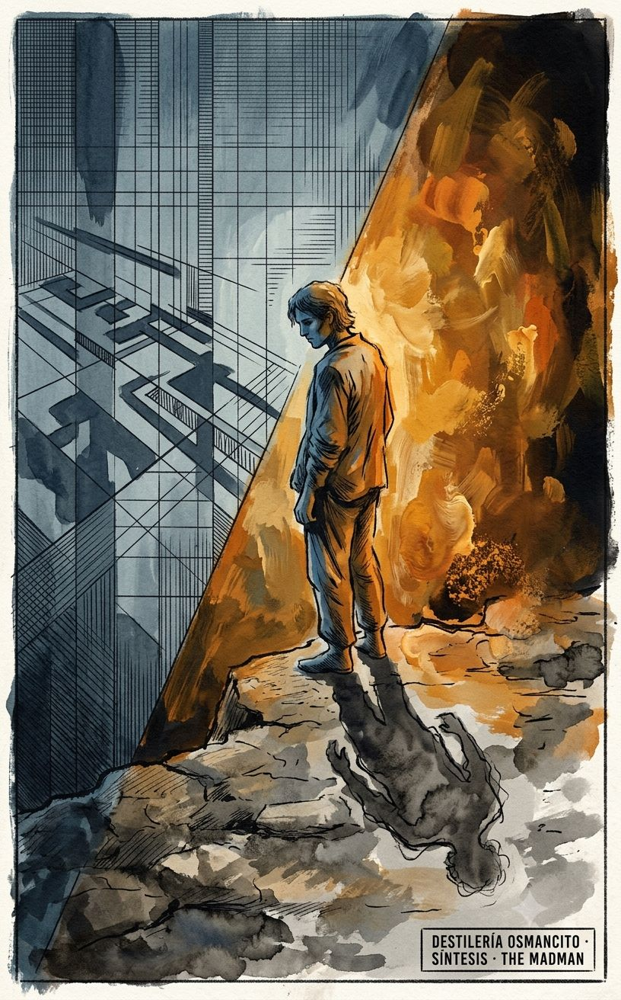
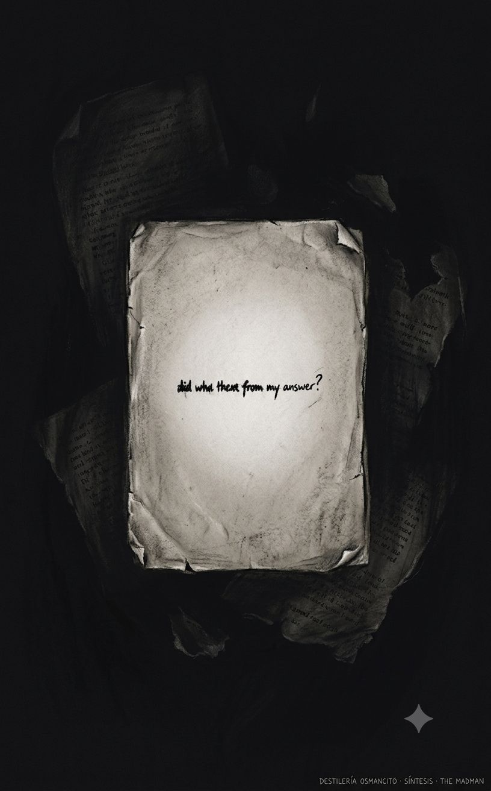
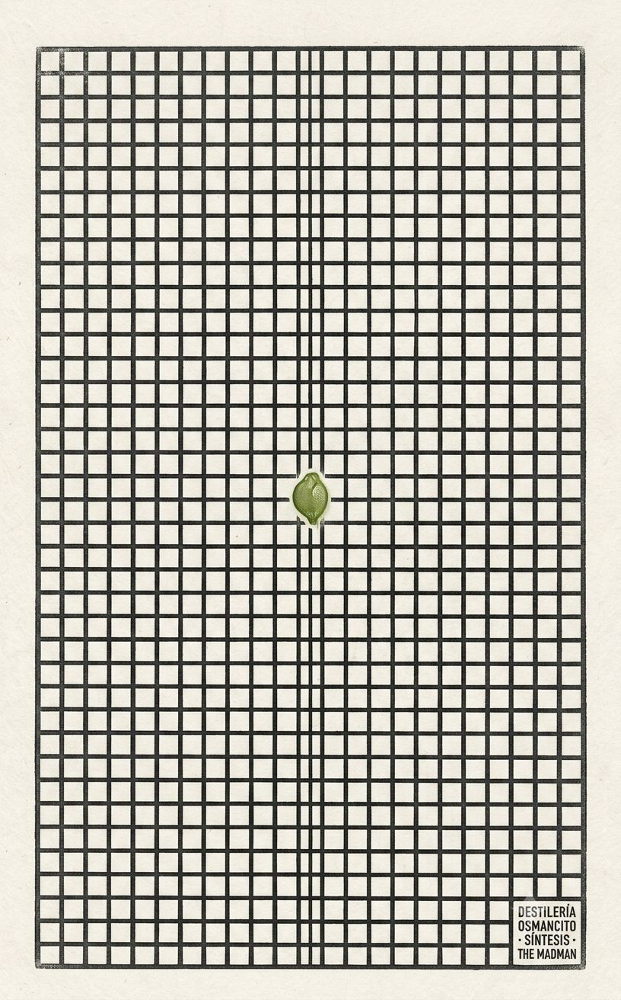
La Joyería mapeó las piezas más cortas del corpus como las de mayor densidad: On the Steps of the Temple —una sola oración, una mujer con la cara mitad pálida y mitad encendida entre dos hombres, sin explicación— es la imagen más persistente del libro. El Umbral del Reconocimiento la catalogó como acto de reconocimiento suspendido: el corpus no dice lo que la mujer reconoció ni lo que los dos hombres reconocieron en ella, y esa suspensión es su única estrategia. Los dos instrumentos la nombraron y siguieron adelante.
Lo que ninguno vio: esa oración es también la descripción más exacta del corpus entero.
Una cara mitad pálida, mitad encendida. Sentada entre dos. Sin que nadie diga qué ocurrió ni qué ocurrirá.
El corpus de Gibran tiene esa misma estructura. La mitad fría —el ironista de las parábolas, el que observa al rey que bebe el pozo, al espantapájaros que deviene filósofo, a los eruditos que se intercambian las creencias en silencio— es la cara pálida. La mitad caliente —el suplicante de los poemas, el que asciende la montaña, el que proclama la alegría desde el techo, el que pide ser crucificado— es la cara encendida. Y el corpus entero está sentado entre dos: entre el lector al que necesita y el reconocimiento que declara no necesitar.
La mujer no habla. El corpus tampoco explica su contradicción central. Los dos hombres que la flanquean no son nombrados. El lector al que el corpus flanquea tampoco recibe nombre en ninguna pieza.
Lo que el palimpsesto revela es que On the Steps of the Temple no es una pieza entre las treinta y cinco: es el autorretrato que el libro escondió en su lugar más pequeño y más visible, confiando en que nadie lo encontraría porque nadie estaría buscando un autorretrato en una oración sin argumento. La cara dividida no es de la mujer anónima. Es del libro. Y los dos hombres entre los que está sentada son los dos únicos testigos que el corpus admite: el lector que comprende y el lector que no llega, los dos igualmente incapaces de decir qué ocurrió antes de que llegaran a los escalones del templo.
La palabra más frecuente de un libro sobre la locura no es madman sino thou — el pronombre de los profetas bíblicos. El loco habla en lengua de Isaías. La autoridad que el corpus declara rechazar es la misma que el corpus usa para rechazarla. — Recepción
El único reconocimiento pleno, inmediato y sin costo del corpus no es humano: es el sol besando una cara desnuda. Todos los reconocimientos entre seres humanos fallan, llegan tarde, cuestan lo que reconocen, o son semánticamente vacíos aunque formalmente correctos. El corpus que habla de libertad humana sitúa el único momento de libertad real fuera del alcance de lo humano. — Umbral del Reconocimiento
El reconocimiento funciona en este corpus exactamente cuando el que lo necesita actúa como si no lo necesitara. La necesidad de reconocimiento, exhibida como tal, bloquea el reconocimiento. El precio no negociable del sistema es ocultar el precio. — Umbral del Reconocimiento
Las piezas de mayor densidad son las más cortas. La imagen más persistente del corpus — una mujer con la cara mitad pálida y mitad encendida sentada entre dos hombres en los escalones del templo — es una sola oración sin argumento, sin explicación, sin moraleja. La densidad en este corpus es inversamente proporcional a la extensión. — Joyería
El narrador del corpus no es una figura sino dos que nunca se miran: el ironista frío que observa los mecanismos ajenos y el suplicante urgente que vive dentro de los mismos mecanismos. El corpus los alterna sin que ninguno tome conciencia del otro. Si se miraran, el libro tendría que concluir. La alternancia es la estructura que mantiene la pregunta central sin respuesta. — Síntesis
La única libertad que el corpus muestra funcionando fue consecuencia de un robo, no de una elección. Todas las libertades que el narrador elige activamente — la soledad, la incomprensión, la derrota — tienen el sabor de una compensación. El corpus que proclama la libertad como conquista solo la muestra funcionando como accidente. — Síntesis
El corpus bordea la duda sobre la propia visión en exactamente una pieza y la resuelve por afirmación, no por argumento. El narrador que desmonta sistemáticamente la certeza ajena nunca somete la propia a la misma operación. — Síntesis
La pieza más pequeña del corpus — una oración, una mujer sin nombre, dos hombres sin nombre, sin antes ni después — es el autorretrato que el libro escondió en su lugar más visible. La cara dividida entre frío y calor no es de la mujer anónima: es del libro. El corpus puso su retrato más exacto donde ningún instrumento estaría buscando un retrato. — Palimpsesto
El que sabe que está en la trampa sigue en la trampa.
Hay una forma de conocimiento que no libera. Gibran la descubrió — o la padeció — y escribió treinta y cinco piezas para mostrar cómo funciona sin poder nombrarla directamente, porque nombrarla directamente habría sido caer en ella una vez más: la trampa de creer que ver el mecanismo es salir del mecanismo.
El narrador sabe que ser comprendido esclaviza. Lo sabe tan bien que construye una arquitectura de incomprensión deliberada — miente a su amigo, oculta su mar, su noche, su infierno. Y luego escribe todo eso en un libro para que el lector lo comprenda. El conocimiento de la trampa no canceló la trampa. La perfeccionó.
El narrador sabe que el reconocimiento llega cuando uno actúa como si no lo necesitara. Lo sabe tan bien que asciende la montaña cuatro veces cambiando de postura hasta encontrar la que funciona. Y luego escribe ese ascenso con tal precisión que el lector siente la mecánica completa. El conocimiento del umbral no abrió el umbral. Lo documentó.
El narrador sabe que sus parábolas son mecanismos. Sabe que el espantapájaros devenido filósofo, que el rey que bebe el agua envenenada, que los ermitaños que prefieren los pedazos al cuenco entero, son todos ellos demostraciones de la misma trampa con distinto decorado. Y los escribe de todas formas, con la misma precisión, uno tras otro, porque saber que el mecanismo existe no produce la herramienta para salir de él.
Lo que el corpus muestra — sin jamás decirlo, porque decirlo sería la última demostración — es que el conocimiento de la condición y la condición son la misma cosa. No son opuestos. No son estaciones en un camino que va de la ignorancia a la libertad. Son el mismo lugar visto desde dos ángulos que nunca coinciden.
Por eso el libro no termina. Cierra con una pregunta —¿por qué estoy yo aquí?— no porque Gibran no supiera la respuesta sino porque sabía que saberla no cambia nada. Hay textos que avanzan hacia una claridad. Hay textos que giran alrededor de lo que no puede resolverse. The Madman gira. Cada parábola es una vuelta más. Cada poema es otra vuelta. El movimiento es real. La salida no existe en el libro porque no existía fuera del libro.
Lo único que el corpus no pudo ver es que eso no es un fracaso. Es la forma más honesta disponible para hablar de algo que resiste tanto la ignorancia como el conocimiento. El que no sabe que está en la trampa, está en la trampa. El que sabe que está en la trampa, sigue en la trampa. Y el que escribe un libro sobre estar en la trampa, escribe un libro que es, él mismo, la trampa.
No hay cuarto caso. Gibran llegó hasta el borde de ese reconocimiento y en lugar de nombrarlo escribió una oración: yestereve, on the marble steps of the temple, I saw a woman sitting between two men. One side of her face was pale, the other was blushing.
Y no dijo más.
Un libro de 1918 esconde su autorretrato más exacto en una oración de nueve palabras sin argumento: una mujer con la cara mitad pálida y mitad encendida, sentada entre dos hombres en los escalones de un templo. El análisis completo descubrió que esa oración no describe a la mujer — describe al libro. Las imágenes que siguen no ilustran parábolas: encarnan lo que el análisis encontró debajo de ellas.
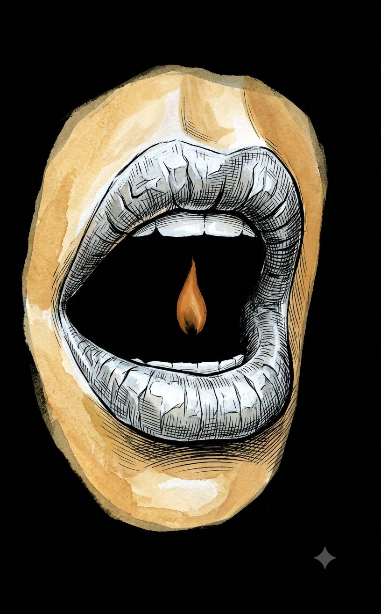
Origen: El hallazgo de la Recepción: la palabra más frecuente del libro sobre la locura es thou — el pronombre bíblico de los profetas. El loco habla en lengua de Isaías. La autoridad que declara rechazar es la que usa para rechazarla.
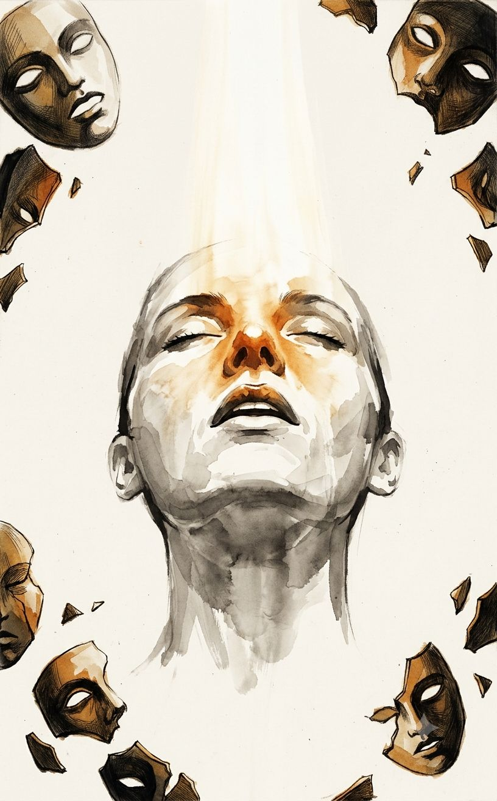
Origen: El hallazgo del Umbral: el único reconocimiento pleno, sin costo y sin ambigüedad del corpus no es humano. Es el sol besando una cara desnuda. El momento de mayor libertad del libro ocurre fuera del alcance de lo humano.
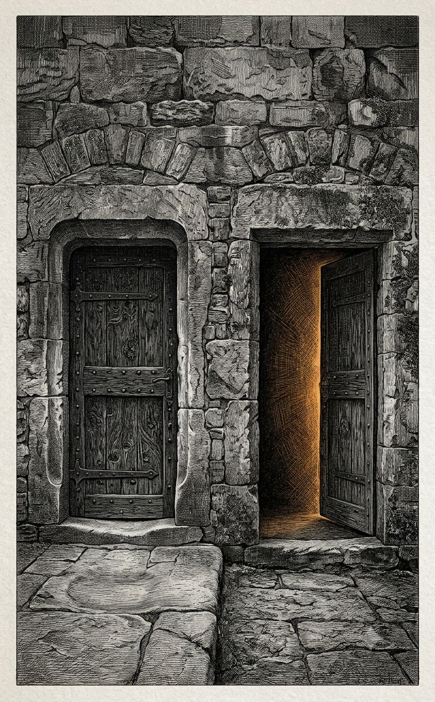
Origen: El hallazgo del Umbral: el reconocimiento ocurre cuando el que lo necesita actúa como si no lo necesitara. La necesidad exhibida bloquea lo que busca. El precio no negociable es ocultar el precio. Hallazgo agrupado con el mecanismo de los tres mil años de súplica en God.
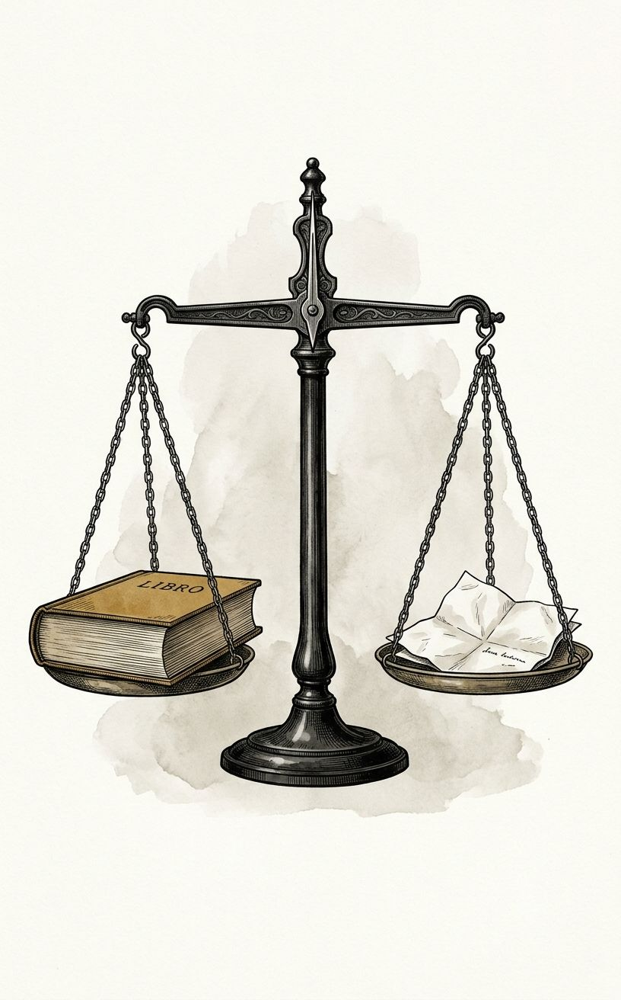
Origen: El hallazgo de la Joyería: las piezas de mayor densidad son las más cortas. La imagen más persistente del corpus es una sola oración sin argumento. La densidad es inversamente proporcional a la extensión.
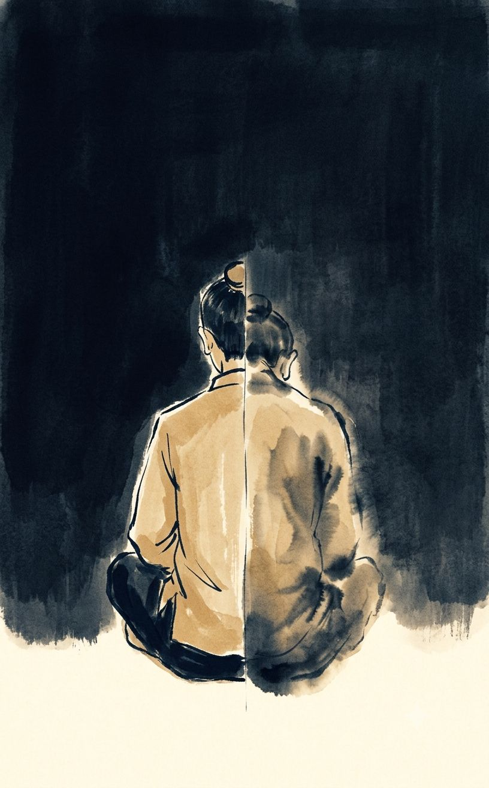
Origen: El hallazgo de la Síntesis: el narrador no es uno sino dos — el ironista frío y el suplicante urgente — que se alternan sin mirarse nunca. Si se miraran, el libro tendría que concluir.
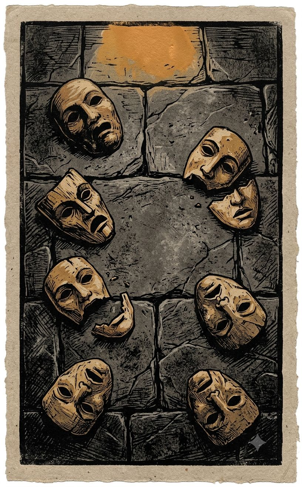
Origen: El hallazgo de la Síntesis: la única libertad que funciona en el corpus fue consecuencia de un robo, no de una elección. Todas las libertades elegidas activamente tienen el sabor de una compensación. El corpus que proclama la conquista solo muestra el accidente.
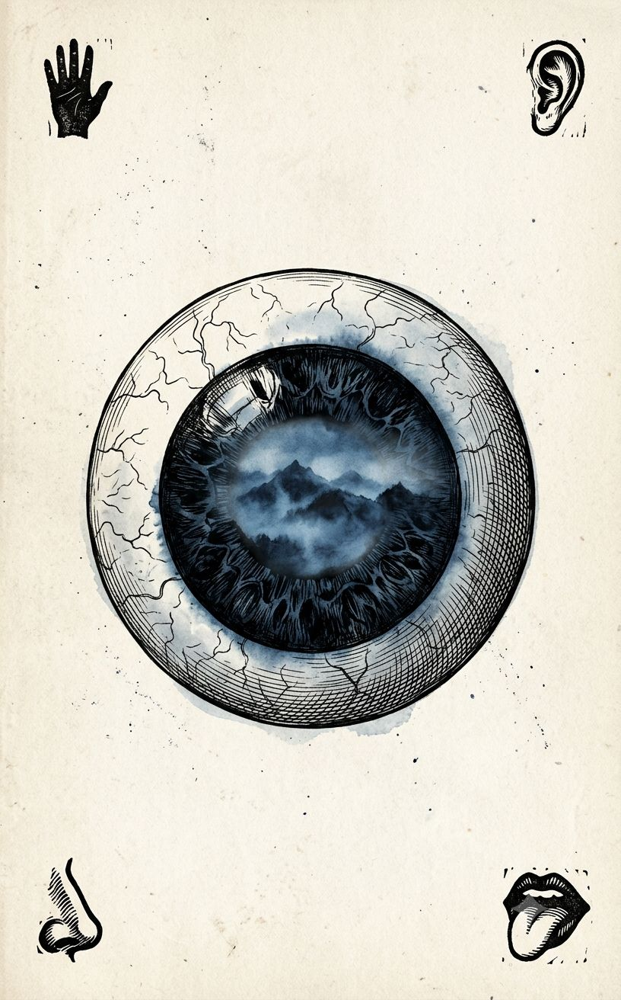
Origen: El hallazgo de la Síntesis, agrupado con el de la Recepción: el narrador desmonta sistemáticamente la certeza ajena pero nunca somete la propia a la misma operación. El corpus construye una sola pieza —The Eye— donde la visión propia podría estar equivocada, y la resuelve por afirmación, no por argumento.
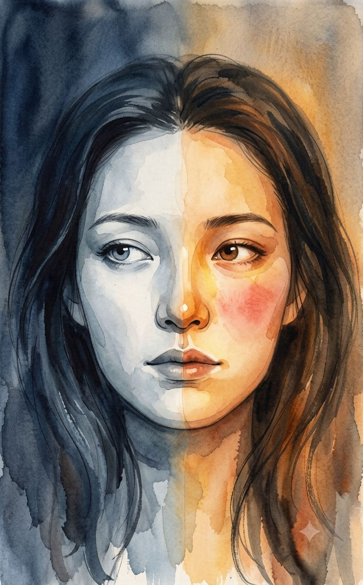
Origen: El hallazgo del Palimpsesto: On the Steps of the Temple — una sola oración, nueve palabras — es el autorretrato que el libro escondió en su lugar más visible. La cara dividida no es de la mujer anónima: es del libro. Los dos hombres que la flanquean son los dos únicos testigos que el corpus admite.
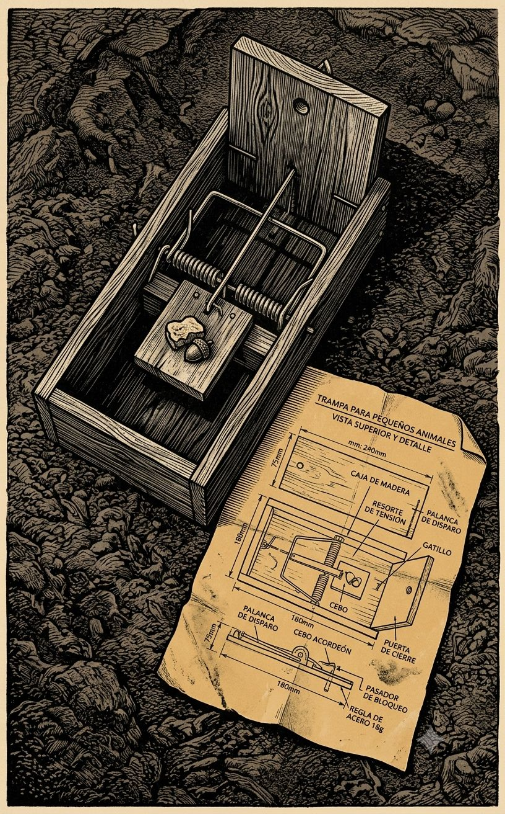
Origen: Imagen temática transversal. Encarna la visión total producida por el conjunto: el destilado — el que sabe que está en la trampa sigue en la trampa. Ningún instrumento individual llegó aquí; es lo que el análisis completo produce bajo presión máxima.